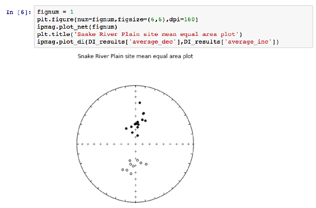
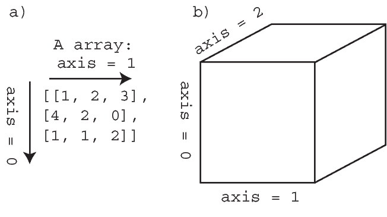
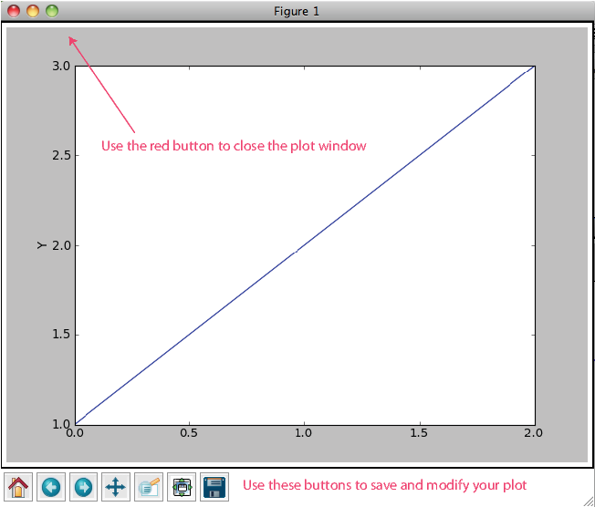
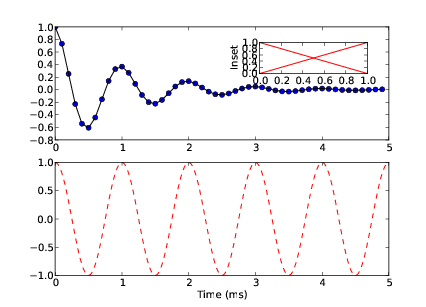
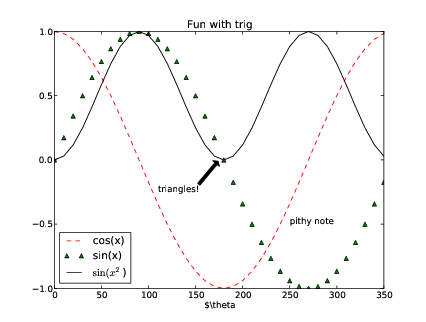
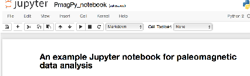
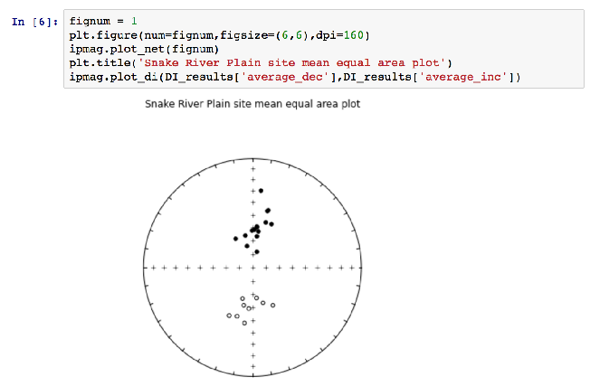
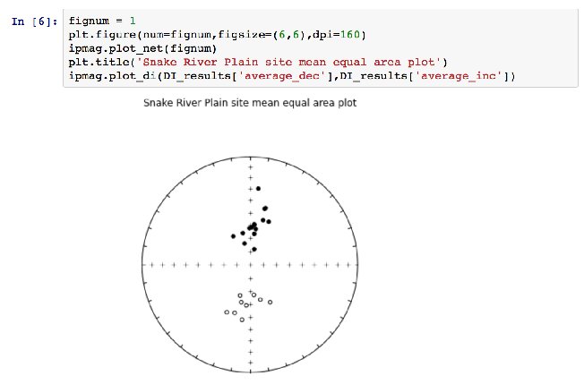

This documentation is updated from that in the book entitled Essentials of Paleomagnetism by Tauxe et al., (2010). This cookbook was designed as a companion website to the book Essentials of Paleomagnetism, 4th Web Edition. Chapter references to this companion book are, for example, “Essentials Chapter 1”.
There are many chefs who contributed to this work, in particular, the MagIC Database Team (Cathy Constable, Anthony Koppers, Rupert Minnett, Nick Jarboe, Ron Shaar, and Lori Jonestrask). Nick Swanson-Hysell (UC Berkeley) contributed the demag_gui and Jupyter notebook documentation. The PmagPy project is supported by grants from the National Science Foundation.
Users of PmagPy should cite the open access article:
If you do not need the full PmagPy functionality, and you only want to use Pmag GUI, MagIC GUI, Thellier GUI, and Demag GUI, there is now a standalone download for you. You won’t need to install Python for this.
Follow the download instructions in the provided links, and then you can skip the “Full install” section and go straight to using Pmag GUI or MagIC GUI. The standalone versions of these applications are still in development; please report problems to the PmagPy team by creating an issue on Github.
To get started, download the zip file and put the resulting folder on your desktop. Inside the PmagPy-Standalone folder you will have one folder each for Pmag GUI and MagIC GUI. Open the appropriate folder and double click the icon (depending on your security settings, you may have to right click the icon and then select “ok” the first time you open it).
You will find the latest stable release at: https://github.com/PmagPy/PmagPy-Standalone-OSX/releases/latest
Get started by downloading the zip file (see links below) and put the resulting folder wherever you wish. You will need to extract all files. Inside the PmagPy-Standalone folder you will find icons for Pmag GUI and MagIC GUI. Double click the program you wish to use and you should be able to get started.
You will find the latest stable release at: https://github.com/PmagPy/PmagPy-Standalone-Windows/releases/latest
This binary has only been tested on a Ubuntu 14.04 (Trusty) distribution and might experience problems on other distributions. You can simply clone the standalone repository or download and unzip. The GUIs should run when you double click the executable, but will take time to start up (anywhere from 5 to 30 seconds) please be patient.
You will find the latest stable release at: https://github.com/PmagPy/PmagPy-Standalone-Linux/releases/latest
To get the full use of PmagPy functionality, you will first have to install Python.
This should give you the full pip path, for example:
Then you would re-run the pip command using the full path:
Here we provide instructions for using pip to install PmagPy from the command line. “Pip” is a package manager that comes standard with any modern Python distribution (NB: you will have to update it to the most recent version). Pip allows you to install and uninstall pmagpy, the package with all the low-level functionality of PmagPy and pmagpy-cli which provides the PmagPy command-line-interface and has all the packages you may use to download/upload, visualize, and manipulate data.
To install using pip:
Now your installation should be complete. There are a few more details:
To make sure everything is working, return to your command line. OSX users, run the command eqarea.py -h. Windows users: you will need to use eqarea -h In fact, you will drop the “.py” anytime you are calling a command-line program.
If you do not see the help message, check the Trouble Shooting section. If you don’t find a solution there, please report the error message and the Python distribution you are using, including the version number, on the PmagPy Github page.
Next, make sure the GUIs are working.
For Windows users: pmag_gui
For Mac users with Anaconda Python: pmag_gui_anaconda.
For Mac users with a different Python: pmag_gui.py
If you don’t see the Pmag GUI window, make sure you have followed all the install directions correctly, and check the Trouble Shooting section. If you are stumped, please create a Github issue.
There are many data files used in the examples of programs and for use with the textbook Essentials of Paleomagnetism. You may want to copy the data files to your Desktop or another convenient location. To do this, navigate on the command line to your destination folder (for help, see this section). Then, use the command:
This will copy all of the PmagPy example files to your current directory (represented by “.”).
To install the Etopo20 package, see install_etopo.py.
We have attempted to support both Canopy and Anaconda Python. However, there are some differences in the way Anaconda Python interacts with the screen. Because of this, Anaconda users will need to use a different command to access the PmagPy GUIs. All four GUIs – Pmag GUI, MagIC GUI, Demag GUI, and Thellier GUI – can be invoked with on a Mac with Anaconda python. However, instead of calling them in the standard way on the command line:
You will use:
If you try to use the first syntax, you will see an error message like this:
Windows Anaconda users still invoke the GUIs without this trick:
If you are a developer, and wish to download PmagPy from the Github repository, you may want to add PmagPy directly to your path instead of installing via pip.
If you’re wondering whether you should do a pip install or a developer install, it depends on what you’re hoping to do with PmagPy. The benefit of a regular pip installation is that you will get a tested, stable version of PmagPy. You can install everything you need quickly and easily, and you’ll be able to use the full functionality. The benefit of a developer installation is that you will be able to stay up-to-date with what other developers are working on. You will also be able to make changes and use those changes immediately. The downside is that the developer install may be buggier and requires to edit your $PATH.
If you want to contribute to PmagPy or modify PmagPy programs for your own use, you should do a developer install, otherwise go with the regular pip install. The developer install follows these steps:
For Windows users:
This can take a while, so be patient. You should get a result that looks something like this:
Once you’ve done that, navigate back into your PmagPy directory and run dev_setup.py again:
For Mac/Linux users:
If you care about the details, here is what the developer install script actually does. It adds these lines editing $PATH to your .bashrc file:
And this line to your editing $PYTHONPATH to your .bashrc file:
where *** is your username. (Of course, these lines will depend on exactly where you have put your PmagPy folder – if it lives on your home directory, your $PATH will point there:
, and so on.)
Check out our guidelines on how to contribute to PmagPy for guidelines of all sorts, including how to raise issues, request features, and make pull requests.
Where do you want to go from here?

Note: Pmag GUI is available for use with both 3.0 and 2.5 data. All new contributions should be built up using 3.0, but 2.5 may be used for legacy data sets and then later upgraded using on the MagIC site. You may specify which data model you want to use on the command-line using the switch “-DM”, or in the window that pops up when you first open Pmag GUI.

The current tutorial is for the 2.5 format, but the usage is very similar. We will update with 3.0 pictures soon!
on the command line for help). In the data_files folder you will find a subfolder named Pmag_GUI. Copy the contents of the ThisProject directory into your own Project Directory folder.

To learn what all the column headers mean look at the documentation for generic_magic.py.

Your dialog boxes should look like this for the AF and thermal data:

and like this for the paleointensity data. For paleointensity data, you must also supply the lab field in micro tesla (40) and orientation relative to sample’s X direction: 0 90.


Filling in metadata is a critical part of building a MagIC Project Directory. The data relevant to this example are arranged in five tables: specimens, samples, sites, locations, ages. To complete the data, click the button, and follow the directions in the help window in order:


This image shows the main panel of the demag GUI:

Use of the Demag GUI is described in more detail in the Demag GUI section below. Here are a few instructions that can be used as a quick start for using Demag GUI. Note: If at any point you require help with a particular aspect of Demag GUI clicking on [Help] → [Usage and Tips] (hotkey: ctrl-h) then clicking on the item you wish to know more about will provide a pop-up box with information for most all aspects of the GUI and Interpretation Editor, see additional help for details.
To analyze the data in the example, follow these steps for each specimen:
This image shows the main panel of Thellier GUI:

Use of the Thellier GUI is described in more detail in the Thellier GUI section below and in this PDF document: Thellier GUI manual. Here are a few instructions that can be used as a quick start for using Thellier GUI.
To analyze the data in the example, follow these steps for each specimen:
For this, you first click on the green prepare upload txt file button on the main page of Pmag GUI. A file will be created in your ThisProject directory. Now, go to the MagIC search interface. Click on the ‘create’ button and find or create your reference.
Click on ‘Upload’ in the Actions column and drag and drop the upload file onto the ‘Drop a MagIC Text File’ window. Congratulations. Your data are now in the database. But, they are not yet activated which you can do by clicking on the ‘Activate’ button in the Actions column. Once you activate an uploaded dataset (only for published papers), it will be publicly available.
Data can be downloaded from the MagIC database and examined with PmagPy tools. The MagIC search interface provides a rich variety of search filters available by clicking on the ‘Filter the MagIC Search Results’ text box. To locate data from a particular reference, simply substitute the digital object identifier (DOI) in your browser window:
http://earthref.org/MAGIC/doi/10.1029/2003GC000661
The above DOI will find the data for the paper by Tauxe et al. (2004). [This may fail in Safari; if so, use an alternative browser like Firefox or Chrome.] To download the data, simply click on the file icon labeled “Download”. This will save a file to your downloads folder. To unpack this file after downloading it from the database, open Pmag GUI and click “unpack downloaded txt file“.
There is an astounding number of different ways that paleomagnetists document data in the field and in the lab. This variety is met with a large number of method codes that describe sampling and orientation procedures (see http://earthref.org/MAGIC/methods.htm for a complete description). The MagIC database expects sample orientations to be the azimuth and plunge of the fiducial arrow used for measurement (see [Essentials, Chapter 9] ) and the orientation of the bedding to be dip direction and downward dip so no matter what your own preference is, it must be translated into the standard MagIC convention for use with the PmagPy programs and with Pmag GUI.
Pmag GUI supports two different ways of getting orientation and other sampling related information into a MagIC usable format. The first way is through step 2 on the GUI front panel and filling in the data from within the GUI. That way will work for many applications, but it may be desirable to fill the spreadsheet in separately from the GUI by using a tab delimited file (orient.txt format). By clicking on step 2 on the GUI front panel you create a file named demag_orient.txt which has all of your sample names in it. Each orient.txt file should have all the information for a single location sensu MagIC.

The next row has the names of the columns. The required columns are: sample_name, mag_azimuth, field_dip, date, lat, long, sample_lithology, sample_type, sample_class) but there are a number of other possible columns (e.g., Optional Fields in orient.txt formatted files are: [date, shadow_angle, hhmm], date, stratigraphic_height, [bedding_dip_direction, bedding_dip], [image_name, image_look, image_photographer], participants, method_codes, site_name, and site_description, GPS_Az]). Column names in brackets must be supplied together and the data for stratigraphic_height are in meters. Also note that if these are unoriented samples, just set mag_azimuth and field_dip to 0.
It is handy to document the lithology, type and material classification information required by MagIC. These are all controlled vocabularies listed at http://earthref.org/MAGIC/shortlists.htm. For archaeological materials, set the lithology to “Not Specified”.
Put in stratigraphic height, sun compass, differential GPS orientation information under the appropriate column headings. You can also flag a particular sample orientation as suspect, by having a column ’sample_flag’ and setting it to either ’g’ for good or ’b’ for bad. Other options include documenting digital field photograph names and who was involved with the sampling.
For Sun Compass measurements, supply the shadow_angle, date and time. The date must be in mm/dd/yy format. If you enter the time in local time, be sure you know the offset to Universal Time as you will have to supply that when you import the file. Also, only put data from one time zone in a single file. The shadow angle should follow the convention shown in this figure (from Tauxe et al., 2010):

Supported sample orientation schemes:
There are options for different orientation conventions (drill direction with the Pomeroy orientation device [drill azimuth and hade] is the default), different naming conventions and a choice of whether to automatically calculate the IGRF value for magnetic declination correction, supply your own or ignore the correction. The program generates er_samples.txt and er_sites.txt files. Be warned that existing files with these names will be overwritten.
All images, for example outcrop photos are supplied as a separate zip file. image_name is the name of the picture you will import, image_look is the “look direction“ and image_photographer is the person who took the picture. This information will be put in a file named er_images.txt and will ultimately be read into the er_image table in the console where additional information must be entered (keywords, etc.).
Often, paleomagnetists note when a sample orientation is suspect in the field. To indicate that a particular sample may have an uncertainty in its orientation that is greater than about 5∘, enter SO-GT5 in the method_codes column and any other special codes pertaining to a particular sample from the method codes table. Other general method codes can be entered later. Note that unlike date and sample_class, the method codes entered in orient.txt pertain only to the sample on the same line.
Samples are oriented in the field with a “field arrow“ and measured in the laboratory with a “lab arrow“. The lab arrow is the positive X direction of the right handed coordinate system of the specimen measurements. The lab and field arrows may not be the same. In the MagIC database, we require the orientation (azimuth and plunge) of the X direction of the measurements (lab arrow). Here are some popular conventions that convert the field arrow azimuth (mag_azimuth in the orient.txt file) and dip (field_dip in orient.txt) to the azimuth and plunge of the laboratory arrow (sample_azimuth and sample_dip in er_samples.txt). The two angles, mag_azimuth and field_dip are explained below.
[1] Standard Pomeroy convention of azimuth and hade (degrees from vertical down) of the drill direction (field arrow). sample_azimuth = mag_azimuth; sample_dip =-field_dip.

2] Field arrow is the strike of the plane orthogonal to the drill direction, Field dip is the hade of the drill direction. Lab arrow azimuth = mag_azimuth-90∘; Lab arrow dip = -field_dip

[3] Lab arrow is the same as the drill direction; hade was measured in the field. Lab arrow azimuth = mag_azimuth; Lab arrow dip = 90∘-field_dip.

[4] Lab arrow orientation same as mag_azimuth and field_dip.

[5] Lab arrow azimuth is mag_azimuth and lab arrow dip is the field_dip-90∘

[6] Lab arrow azimuth is mag_azimuth-90∘, Lab arrow dip is 90∘-field_dip, i.e., the field arrow was strike and dip of orthogonal face:

Structural correction conventions:
Because of the ambiguity of strike and dip, the MagIC database uses the dip direction and dip where dip is positive from 0 → 180. Dips>90 are overturned beds.
Supported sample naming schemes:
When you are finished with editing the orient.txt file, return to step 2 on the GUI front panel.
There are two types of files that help in plotting of IODP paleomagnetic data sets: the core summaries with depth to core top information and the sample information that contains lists of samples taken. Visiting the IODP science query website at http://web.iodp.tamu.edu/WTR/html/sci-data.html allows you to select ’SRM - Remanence of magnetization’ under the Analysis scroll down menu. By picking the expedition, site, hole, etc. you can download a .csv format (comma separated values) for the expedition data. (Be aware that this is the rawest form of the data, including disturbed intervals, bad measurements, core ends, etc. and may not be exactly what ended up getting published!). First click on the “Show Report“ button, then, “Expand Table”, then “Get File”:

This can take a very long time, so get yourself a cup of tea.
You can also (while you’re at it) click on the ’Summaries’ tab and download the coring summaries:

Place both of the downloaded files in your MyFiles directory.
The MagIC database is designed to accept data from a wide variety of paleomagnetic and rock magnetic experiments. Because of this the magic_measurements table is complicated. Each measurement only makes sense in the context of what happened to the specimen before measurement and under what conditions the measurement was made (temperature, frequency, applied field, specimen orientation, etc). Also, there are many different kinds of instruments in common use, including rock magnetometers, susceptibility meters, Curie balances, vibrating sample and alternating gradient force magnetometers, and so on. We have made an effort to write translation programs for the most popular instrument and file formats and continue to add new supported formats as the opportunity arises. Here we describe the various supported data types and tell you how to prepare your files for importing. In general, all files for importing should be placed in the MyFiles directory or in subdirectories therein as needed. If you don’t see your data type in this list, please send an example file and a request to: ltauxe@ucsd.edu and we’ll get it in there for you.
The supported file formats are:
Rock Magnetometer Files:
Anisotropy of Magnetic Susceptibility files:
Pmag GUI will import hysteresis data from room temperature Micromag alternating gradient magnetometers (AGM) in several different ways. You can import either hysteresis loops or backfield curves, or you can import whole directories of the same. In the latter case, the file endings must be either .agm (.AGM) or .irm (.IRM) and the first part of the file must be the specimen name. See the documentation for agm_magic.py for examples.
Now you’ve collected together all the files you need, we can start importing them into MagIC directory with Step 1 in Pmag GUI.
Start up MagIC GUI. You’ll do this by clicking on the icon (if you downloaded the standalone version) or entering ‘magic_gui.py’ on your command line (if you downloaded the full PmagPy installation). If you are using Anaconda Python, you will type ‘magic_gui_anaconda’ on your command line instead.
When you first start magic_gui.py, you will change directories into a ‘Project Directory’. For each study, create a directory with a name that relates to that study. Here we will call it MyProject. This is where you will collect and process all the rock and paleomagnetic data for a given study, usually a publication. The project directory name should have NO SPACES and be placed on the hard drive in a place that has NO spaces in the path. Under certain Windows versions, this means you should not use your home directory, but create a directory called for example: D:\MyPmagProjects and put MyProject there.

Now we’ll walk through a simple data input process, with fake data.


All other required data will fill in automatically. If you don’t provide latitude and longitude data for a sample, it will propagate down from the site after you save and close the grid.


Open the result grid to fix the error. Click ‘Show help’ for more information about validations. In this case, it is a simple fix: add method code ‘LP-PI’ to the average V[A]DM result.

If you are not using a Unix-like computer (*NIX), you may never have encountered a command line. Using any of the command line programs requires accessing the command line. If you are using the MacOS operating system, look for the Terminal application in the Utilities folder within the Applications folder. When the Terminal application is launched, you will get a terminal window. The Unix (and MacOS) Bash shell has a $ sign as a prompt. Other shells have other command line prompts, such as the antiquated ‘C-shell’ used by Lisa Tauxe (don’t ask) which has a % prompt which is used in the examples here.

Under the Windows operating system, you can find your command line by searching for the “cmd” application. You’ll use this if you are using the full pip installation of PmagPy. If you are doing the standard PmagPy install, you will create a shortcut to the PmagPy command window on your desktop. Double clicking on that will give you a window in which you can type PmagPy commands. You will use the PmagPy prompt instead of the Windows command line from there on.

Note that the location of this program varies on different computers, so you may have to hunt around a little to find yours. Also, the actual “prompt” will vary for different machines.
When you first open a terminal window, you are in your “home” directory. Fundamental to all operating systems is the concept of directories and files. On windows-based operating systems (MacOS or Windows), directories are depicted as “folders” and moving about is accomplished by clicking on the different icons. In the world of terminal windows, the directories have names and are arranged in a hierarchical sequence with the top directory being the “root” directory, known as “/” (or C:’backslash’ in Windows) and the file system looks something like this:

Within the root directory, there are subdirectories (e.g. Applications and Users in bold face). In any directory, there can also be “files” (e.g. dir_cart_example.dat in italics). To refer to directories, the operating system relies on what is called a “pathname”. Every object has an “absolute” pathname which is valid from anywhere on the computer. The absolute pathname in *NIX always begins from the root directory / and in DOS (the operating system working in the Windows command line window), it is C:’backslash’.
The absolute pathname to the home directory lisa in the figure is /Users/lisa. Similarly, the absolute pathname to the directory containing PmagPy scripts would be /Users/lisa/PmagPy. There is also a “relative” pathname, which is in reference to the current directory (the one you are ‘sitting’ in). If user “lisa” is sitting in her home directory, the relative pathname for the file dir_cart_example.dat in the directory data_files would be data_files/dir_cart/dir_cart_example.dat. When using relative pathnames, it is useful to remember that ./ refers to the current directory and ../ refers to the directory “above”. Also, lisa’s home directory would be ~lisa, or if you are logged in as lisa yourself, then it is just ~.
Now that you have found your command line and are comfortable in your home directory, you can view the contents of your directory with the Unix command ls or the DOS command dir. You can make a new directory with the command
This command works in both Unix and DOS environments) and you can move into your new directory with the command
To move back up into the home directory, just type cd .. remembering that .. refers to the directory above. Also, cd by itself will transport you home from where ever you are (there’s no place like home....). You can also change to any arbitrary directory by specifying the full path of the destination directory.
Programs that operate at the command line level print output to the screen and read input from the keyboard. This is known as “standard input and output” or “standard I/O”. One of the nicest things about working at the command line level is the ability to redirect input and output. For example, instead of typing input to a program with the keyboard, it can be read from a file using the symbol <. Output can either be printed to the screen (standard output), redirected into a file using the symbol >, appended to the end of a file with >> or used as input to another program with the pipe operator (|).
There are many ways of editing text and the subject is beyond the scope of this documentation. Text editing is a blessing and a curse. You either love it or hate it and in the beginning, and if you are used to programs like Word, you will certainly hate it. (And if you are used to a decent text editor, you will hate Word!). But you can’t use Word because the output is in a weird format that no scripting languages read easily. So you have to use text editor that will produce a plain (ascii) file, like Notepad, TextWrangler, Sublime Text or Atom. TextWrangler is free software available for Macs, the notepad comes standard in the Windows operating system and the Atom text editor is a free cross-platform option with lots of nice packages available that extend its functionality. Enthought Python’s Canopy programming environment comes with its own text editor.
When you type something on your command line, your operating system looks for programs of the same name in special places. These are special “paths” so the directory with your Python scripts has to “be in your path”. To inform the operating system of the new directory, you need to “set your path”. It should have been set when you installed PmagPy.
The Demag GUI (demag_gui.py) program enables the display and analysis of paleomagnetic demagnetization data. The software will display specimen level data within the chosen directory as a Zijderveld plot, equal area plot and intensity plot. Interpretations can be made to the data as least-squares line or plane fits. Mean directions can be calculated and displayed for these interpretations. These interpretations can be exported as MagIC pmag files from the program.
The best way to launch the Demag GUI application is through Pmag GUI. If you have installed PmagPy using pip, (or if PmagPy has been added to your PATH), you can type pmag_gui.py at the command line to launch it. Anaconda users will instead type ‘pmag_gui_anaconda’.
Alternatively, you can navigate to the PmagPy home directory and type python ./pmag_gui.py. Within Pmag GUI, data can be converted from the format of a particular lab into MagIC format so that it can be displayed and analyzed within Demag GUI. The program can be started by clicking on the Demag GUI button in Pmag GUI.
If you want to launch Demag GUI directly, (assuming PmagPy was
properly installed using pip or has been added to your PATH), you can
simply type demag_gui.py at the command line. Anaconda users will type
‘demag_gui_anaconda’ instead. Note: on OSX it is recommended to launch
through Pmag GUI as on wxpython 2.9 the drop-down boxes behave better when
Demag GUI is launched this way.

Demag GUI can also be launched through the command line by navigating to
the directory containing demag_gui.py and running it with:
A new fit can be added by clicking the ‘add fit’ button or if no fit has yet been
created for the current specimen by double clicking on two measurements in the
list of measurements to the left or by double clicking on the data points on the
zijderveld plot. It is also possible to add interpretations in mass using the
interpretation editor tool described bellow. Additionally, you can select the fit
you would like to edit or view by using the drop-down menu under the add fit
button. Once you have selected a fit, the shape of the end points of the selected
fit will turn to diamond shapes on all plots to distinguish them from the other
data points.

Once the desired fit is selected, its bounds can be edited using the drop-down
boxes under the bounds header.

Another way to select bounds is to double-click the list of measurement
steps in the list on the left. The included steps in the currently selected
interpretation are shown in highlighted in blue on the measurement list and
the measurements marked “bad” are shown in highlighted in red. In
the case of duplicate measurements, the first good measurement with
the same treatment is used as a bound. All points between the selected
bounds that are flagged good (i.e. not flagged bad and marked in red),
including duplicate measurements, will be included in the interpreted
fit.

Finally, you can select the bounds of an interpretation directly off the Zijderveld
plot by hovering your mouse over a measurement (should change to a hand
shape) and double clicking.
When first created, the fit will be given a generic name such as Fit 1.
The name of the fit can be changed from the default by typing into the
drop-down box containing fit name and then pressing enter. The default fit
type is a least-squares line. You can choose different fits, such as a line
anchored to the origin or a plane, by using the drop-down menu under
the label ‘interpretation type’. Plane fits can be plotted as either poles,
full planes, partial planes, best fit vectors, or best fit vectors and full
plane (Note: plane poles will be displayed as squares and best fit vectors
will display as sideways triangles on high level mean plot). This display
option can be changed in the second drop-down menu under interpretation
type.

The properties of the currently selected fit to the data can be seen in the
upper center of the GUI in a box labeled ‘Interpretation Directions and
Statistics’.

If you would like to delete a single interpretation, select the one you wish to
delete from the interpretation drop-down menu and click delete. If you wish to
clear all interpretations you may go into the interpretation editor located under
the tools menu, select the fits you wish to delete and click the “delete selected”
button.
You can switch current specimen by clicking the next or previous button under the specimen box in the side bar (hotkey: ctrl-right and ctrl-left respectively). You can also select specimen from the drop-down menu or type the name of the specimen directly into the specimen box and hit enter to go directly to that specimen. Finally, you can double click on any of the points on the higher level means plot to switch directly to that specimen and interpretation.
The choice between coordinate systems (i.e. specimen, geographic or tilt-corrected) is available on the left above the list of steps. The data list and the plots will update to reflect the chosen coordinate system.
You can alter the X axis of the Zijderveld plot using the Zijderveld plot interactions box to set X=North, East, or NRM dec.

Due to flux jumps or other such errors, individual measurements should sometimes be excluded from interpretation. Such measurements can be flagged as “bad” by right clicking them within the measurement list and the measurement will then be highlighted in red. Additionally, you can double right click on the point you want to make bad in the Zijderveld plot to toggle it bad. The measurement_flag in the magic_measurements file will be change from “g” to “b” when a measurement is marked as bad the step will not be included in fits that are made to the data. Any measurement marked as bad will be colored red in the step list and will be shown as an empty rather than filled circle on the Zijderveld, equal area and M/M_0 plots. To change a bad measurement back to being good, one can right click on it again. Upon doing so, the red highlighting will go away, the data will be shown colored in within the plots and any fit that spans that data point will be recalculated to include it.
Acceptance criteria can be set by using the menu option [Analysis] → [Acceptance Criteria] → [Change Acceptance Criteria]. These criteria will be written to a pmag_criteria.txt table. These criteria can then be used to exclude interpretations that fail checks against this criteria during export.
The four plots that take up the majority of the center of the GUI are where data and their interpretations are displayed. All plots are initially set to zoom mode and this is signified by a cross shaped cursor when you mouse over them. To zoom simply click and drag the rectangle to the desired area. You can switch to pan mode by right clicking on any one of the graphs and then clicking and dragging will pan around the plot. Finally, to return to the original plot zoom level and position simply click the middle mouse button to return home. Note: In the absence of a middle mouse button pressing both right and left mouse buttons at the same time works on most laptops in the case of Macbooks clicking with two fingers should work, and if using Apple’s magic mouse we recommend you download the MagicPrefs program which will allow you to configure your mouse however you prefer.
On the Zijderveld plot you have the additional option to select the current interpretation’s bounds by double clicking on a measurement point. You can also double right click on a measurement point in the zijderveld plot to mark it bad.
On the equal area plots, both the specimen and high level means, you can double click on any interpretation to switch to that specimen and interpretation immediately.
Once you have picked out your interpretations, you can save the session data in two different ways: (1) as a .redo file which will allow you to have the fits preserved to be view again with Demag GUI or (2) as MagIC pmag_* tables to be uploaded to the MagIC database or otherwise processed. In addition, you may save image files of the plots.
The .redo File: You can use the menu option [File] → [Save current interpretations to a redo file] to create this file type, you can just click the save button next to add fit, or you can use the hotkey ctrl-s. The advantage of the .redo file type being that it is designed to save your place when analysing a large dataset. Loading a redo file will reload all interpretations previously created any special colors assigned to them and take you to the specimen you saved the redo file on allowing you to pick up where you left off. Note: This file type does NOT load previous interpretations on start up you must go to the menu option [File] → [Import previous interpretations from a redo file] (hotkey: ctrl-r) to restore your previous session.
The Pmag Tables: By going to the menu [File] → [Save MagIC pmag tables] you can export your interpretations made in Demag GUI to the MagIC pmag tables which can then be used by other MagIC programs or uploaded to the MagIC database. You can export any or all of the three coordinate systems upon selecting this option and you may choose to save pmag_samples, pmag_sites, and pmag_results tables in addition to the pmag_specimens table that is output. If you choose to output additional information you will be prompted by a pop up window for additional information. Note: This save format loads on start up of the GUI immediately restoring your interpretations. Selection of this option will overwrite your demag_gui.redo file in the working directory.
Images of Plots: Select the menu option [File] → [Save plot] → [Save all plots] to save all plots, or you can save any of the plots individually. If you zoom or pan any of the plots the shifted image will be saved not the originally plotted image although the plot will redraw and reset to the original image in the GUI.
You can flag the current specimen interpretation (marked by large diamonds on all plots) good or bad by using the menu option [Analysis] → [Flag Interpretations]. The list of interpretations in the interpretation editor tool of Demag GUI can also be used to toggle interpretations good or bad in the same way that measurements can be marked good or bad in the measurement list, by right clicking on the entry you want toggled. This will change the shape of the interpretation to a small diamond on all plots, remove it from use in any higher level means, and mark the entry specimen˙flag in the pmag tables b instead of g to signify this.
You can check sample orientation by using the menu option [Analysis] → [Sample Orientation] → [Check Sample Orientations] (hotkey: ctrl-o). This function will set your mean options to fisher of all components at the current site level and display the wrong arrow (up triangle), wrong compass (down triangle), and rotated sample for declanation incraments of 5 degrees (dotted circle). This allows you to check if the sample orientation is correct and thus can be used in analysis. If you determine the current sample orientation to be bad you can mark it as such using the menu option [Analysis] → [Sample Orientation] → [Mark Sample Bad] (hotkey: ctrl-.). This will change the sample˙orientation˙flag in the er˙samples file to b not g and will prevent you from marking the specimen interpretations good in that sample so you do not use the improperly oriented data in your final results. If you later realize this was a mistake you can mark the sample orientation good again using [Analysis] → [Sample Orientation] → [Mark Sample Good] (hotkey: ctrl-,). Finally, to turn off the check sample orientations data simply select the [Check Sample Orientations] option again and it will be removed. Note: The current sample is specified as the sample of the current specimen.

The set of drop-down boxes to the right of the interpretation data are there to determine what level you want to analyse in the high level means plot and are grouped into the Display Level and Mean Options boxes.

The Display Level boxes consist of the upper drop-down menu which allows you to select the level at which interpretations are displayed options being all interpretations in the current: sample, site, location, or study. The lower drop-down menu lets you select what the current sample, site, location, or study is.
The top drop-down menu in the Mean Options box lets you chose what kind of mean you would like to take of the specimen components currently displayed. The lower drop-down menu lets you pick which specimen components to display allowing you to display All components, No components, or any single component.
The mean statistics for the chosen high level mean are displayed in the lower right of the GUI and can be cycled through using the arrow buttons next to the statistics boxes in the case of multiple high level means.
It is possible to toggle on and off displaying any one of the means in the high level plot which can be useful in the case of a cluttered graph of all components. This can be done by going to the menu option [Analysis] → [Toggle Mean Display] and selecting the name of the component you would like to toggle.
All interpretations marked bad will appear as small diamonds regardless of type on the high level mean plot. The below gives examples for a number of plane display options of bad interpretations (the symbols off to the side), best fit vectors to the means (sideways triangles), plane poles (squares), and the planes themselves.

In order to more easily view and edit specimen interpretation data there is a specimen interpretation editor which can be launched using the menu option [Tools] → [Interpretation Editor] (hotkey: ctrl-e). Note: If you would like more help than provided here the interpretation editor has in context help same as the main GUI, see additional help for details.
List of Interpretations: This panel contains a list which details the fits made to the data and their parameters from which you can select which interpretation to view by double clicking it. In the list, the currently selected interpretation is highlighted blue as shown in the image below. You can mark interpretations as bad which removes them from any Fisher means or other high level means by right clicking on their entry in the list. All interpretations marked bad are colored red in the list and marked as a small diamond on the plot. The specimen entry associated with this fit will be given a bad (‘b’) flag within the pmag_specimens table. You can search through interpretations by using the search bar above the list. Finally, interpretations can be highlighted by clicking on the list and holding the shift or ctrl/command key to select multiple interpretations.
Buttons and Boxes: Highlighting entries allows you to delete or alter the characteristics of multiple interpretations at once without having to select each one in turn. This mass alteration is allowable using the the Name/Color/Bounds boxes to input the changes and then clicking the “apply changes to highlighted fits” button. You can delete highlighted fits using the “delete highlighted fits” button. The “add fit to highlighted specimens” button in the interpretation editor adds a fit to all highlighted specimens in the list on the left. You can use the “add new fit to all specimens“ as a convenient option to add a new interpretation with all the attributes described in the above Name/Color/Bounds boxes to every specimen with measurement data. This is a useful method for quickly analysing a new dataset by checking for components between common unblocking steps like giving every specimen a general magnetite interpretation inferring about where that should be (e.g. bounds=300C to 580C, name=MAG, color=violet).
Additional High Level Means Options: The interpretation editor also allows the displaying of site and sample means as the primary points on the high level mean plot by changing the bottom left display options drop-down box. Though it does not yet allow taking fisher means of sample means or site means so the mean type box will be forced to read ”None” if this option is changed from specimens.

Another tool offered by Demag GUI is the VGP (Virtual Geomagnetic Pole) Viewer which allows you to view your VGPs before exporting to MagIC tables. This tool can be opened by using the menu option [Tools] → [View VGPs] (hotkey: ctrl-shift-v). The VGP viewer requires latitude and longitude data for sites and locations in order to calculate all VGPs from specimen interpretations, if this data is not already contained in the MagIC tables imported when the GUI started then it will be asked for during calculation so have it ready. The VGP viewer allows you to select viewing samples, sites, or location VGPs from the drop-down menu at the top. Plot interactions are the same here as in the main GUI and can be zoomed, panned, and points selected in the same manner. The list on the left shows all the data for the currently displayed VGPs.

The white box in the far top right of the GUI is there to provide relevant warnings about aspects of the current specimen and interpretation such as missing data or duplicate data and can be useful in debugging and analysis.
Finally, if you need more help working with Demag GUI it offers in context assistance with the menu option [Help] → [Usage and Tips] (hotkey: ctrl-h) which will change your cursor and then let you click on whichever aspect of the GUI you want help with. Once you have clicked a yellow pop-up box with information should appear in most cases, not all features have information but most should.

[Essentials Chapter 10] and [MagIC] [Thellier_GUI_full_manual.pdf]
The program Thellier GUI (thellier_gui.py) combines functions from thellier_magic.py and new tools described by Shaar and Tauxe (2013) in a user-friendly graphical user interface (GUI).
As with Demag GUI, Thellier GUI can be called from the command line or from within Pmag GUI.
To launch Thellier GUI independently, find your command line and enter:
If using Anaconda Python, you will instead use:
Once open, Thellier GUI loads files already prepared in a This Project directory and the interpretations from Thellier GUI are part of the workflow of Pmag GUI. This section is a brief introduction on how to use Thellier GUI as a stand alone application. Much more information is available within this manual: Thellier GUI full manual.
A complete list of the definitions for paleointensity statistics used by Thellier GUI is available as a supplement to the article by Paterson et al., 2014 and available for download here:
After launching the program, a “choose project directory” dialog window will appear as soon as the GUI is started. Your ThisProject directory should include a file named magic_measurements.txt (created for example by Pmag GUI. If a file named rmag_anisotropy.txt is in the project directory, then the program reads in the anisotropy data. Reading and processing the measurements files may take several seconds, depending on the number of the specimens.
When your ThisProject project directory is selected, the program reads all the measurement data, checks them, processes them and sorts them. If non-linear-TRM (NLT) data exist in magic_measurement.txt then the program tries to process the data using Equations (1)-(3) in Shaar et al., 2010. The program reads magic_measurement.txt, and processes the measurements for presentation as Arai and Zijderveld plots. We recommend that you check all the warnings and errors in Thellier_GUI.log before starting to interpret the data. For details about warnings and error messages during these steps, consult the tutorial document in the thellier_GUI folder in data_files. Also, consult the Preferences to change certain plotting options.
This figure shows a snapshot of the main panel.

The top field in the panel includes the following buttons/controls (from left to right):
The center of the main panel has these elements:
The bottom of the main panel include paleointensity statistics. The first line has the threshold values (empty if N/A). The second line is the specimen’s statistics. For details see Appendix A1 in Shaar and Tauxe (2013).
This application provides a simple interface for transforming data from a paleomagnetic or rock magnetic study into the format necessary for contribution to the MagIC database.
PmagPy scripts work by calling them on a command line. The python scripts must be placed in a directory that is in your “path”. To see if this has been properly done, type dir_cart.py -h on the command line and you should get a help message. If you get a “command not found” message, you need to fix your path; check the “installing python” page on the software website. Another possible cause for failure is that somehow, the python scripts are no longer executable. To fix this, change directories into the directory with the scripts, and type the command: chmod a+x *.py
For people who hate command line programs and prefer graphical user interfaces with menus, etc., some of the key programs for interpreting paleomagnetic and rock magnetic data are packaged together in a program called Pmag GUI. This can be invoked by typing pmag_gui.py on the command line. The Pmag GUI program generates the desired commands for you behind the scenes, so you do not have to learn UNIX or how to use the command line (except to call Pmag GUI itself). Nonetheless, some understanding of what is actually happening is helpful, because Pmag GUI is more limited than full range of PmagPy programs. So, here is a brief introduction to how the PmagPy programs work.
All PmagPy programs print a help message out if you type: program_name.py -h on the command line. Many have an “interactive” option triggered by typing program_name.py -i. Many also allow reading from standard input and output. The help message will explain how each particular program functions. There are some common features for the command line options:
The PmagPy scripts call on two special modules, the pmag and the pmagplotlib modules. These contain most of the calculations and plotting functions.
The source code and the help messages for all programs in the PmagPy package are also available online at:
https://github.com/PmagPy/PmagPy
A link to these source code/help menu files is provided for each program listed below with the format [program_name_docs].
Examples of how to use command line PmagPy programs are given below. In all examples, the ’$’ prompt stands for whatever command line prompt you have. The example data files referred to in the following are located in the data_files directory bundled with the PmagPy software distribution.
[Essentials Chapter 13] [MagIC Database] [aarm_magic docs]
Anisotropy of anhysteretic or other remanence can be converted to a tensor and used to correct natural remanence data for the effects of anisotropy remanence acquisition. For example, directions may be deflected from the geomagnetic field direction or intensities may be biased by strong anisotropies in the magnetic fabric of the specimen. By imparting an anhysteretic or thermal remanence in many specific orientations, the anisotropy of remanence acquisition can be characterized and used for correction. We do this for anisotropy of anhysteretic remanence (AARM) by imparting an ARM in 9, 12 or 15 positions. Each ARM must be preceded by an AF demagnetization step. The 15 positions are shown in the k15_magic.py example.
For the 9 position scheme, aarm_magic.py assumes that the AARMs are imparted in positions 1,2,3, 6,7,8, 11,12,13. Someone (a.k.a. Josh Feinberg) has kindly made the measurements and saved them an SIO formatted measurement file named arm_magic_example.dat in the datafile directory called aarm_magic. Note the special format of these files - the treatment column (column #2) has the position number (1,2,3,6, etc.) followed by either a “00” for the obligatory zero field baseline step or a “10” for the in-field step. These could also be ‘0‘ and ‘1’.
We need to first import these into the magic_measurements format and then calculate the anisotropy tensors. These can then be plotted or used to correct paleointensity or directional data for anisotropy of remanence.
So, first use the program sio_magic.py to import the AARM data into the MagIC format. The DC field was 50 μT, the peak AC field was 180 mT, the location was ‘Bushveld’ and the lab protocol was AF and Anisotropy. The naming convention used Option # 3 (see help menu).
Then use the program aarm_magic.py to calculate the best-fit tensor and write out the MagIC tables: rmag_anisotropy and rmag_results. These files can be used to correct remanence data in a pmag_specimens format table (e.g, intensity data) for the effects of remanent anisotropy (e.g., using the program thellier_magic_redo.py.
Here is a transcript of a session that works. Note that the sio_magic.py command is all on one line (which is what the terminal backslash means).
[Essentials Appendix A.3.4] [angle docs]
Use the program angle.py to calculate the angle (α) between two directions D = 350.2,I = 26.8;D = 98.6,I = 67.3.
[NB: PC users will get a more angry sounding exit message]
You can also use this program by reading in a filename using the ’-f’ option or from standard input (with <). Try this out with the test file in the angle directory (angle.dat). First examine the contents of the input file using “cat” (or “ type” on a DOS prompt). Then use angle.py to calculate the angles. You can also save your output in a file angle.out with the ’-F’ option:
[Essentials Chapter 13]; [MagIC Database] [ani_depthplot docs]
Anisotropy data can be plotted versus depth. The program ani_depthplot.py uses MagIC formatted data tables of the rmag_anisotropy.txt and er_samples.txt types. rmag_anisotropy.txt stores the tensor elements and measurement meta-data while er_samples.txt stores the depths, location and other information. Bulk susceptibility measurements can also be plotted if they are available in a magic_measurements.txt formatted file.
In this example, we will use the data from Tauxe et al. (2012) measured on samples obtained during Expedition 318 of the International Ocean Drilling Program. To get the entire dataset, go to the MagIC data base at: http://earthref.org/MAGIC/ and find the data using the search interface. As a short-cut, you can use the “permalink”:
http://earthref.org/MAGIC/m000629dt20120607193954.
Download the text file by clicking on the icon under the red arrow in:

Unpack the data using the program download_magic.py. This will unpack the data into the different holes. Change directories into Location_2 (which contains the data for Hole U1359A). Or, you can use the data in the ani_depthplot directory of the example data files.
or for Anaconda users:
will create the plot:

[Essentials Chapter 13]; [MagIC Database] [aniso_magic docs]
Samples were collected from the eastern margin a dike oriented with a bedding pole declination of 110∘ and dip of 2∘. The data have been imported into a rmag_anisotropy formatted file named dike_anisotropy.txt.
Make a plot of the data using aniso_magic.py. Use the site parametric bootstrap option and plot out the bootstrapped eigenvectors. Draw on the trace of the dike.
These things are done in this session:
which produced these plots:

The specimen eigenvectors are plotted in the left-hand diagram with the usual convention that squares are the V 1 directions, triangles are the V 2 directions and circles are the V 3 directions. All directions are plotted on the lower hemisphere. The bootstrapped eigenvectors are shownin the middle diagram. Cumulative distributions of the bootstrapped eigenvalues are shown to the right with the 95% confidence bounds plotted as vertical lines. It appears that the magma was moving in the northern and slightly up direction along the dike.
There are more options to aniso_magic.py that come in handy. In particular, one often wishes to test if a particular fabric is isotropic (the three eigenvalues cannot be distinguished), or if a particular eigenvector is parallel to some direction. For example, undisturbed sedimentary fabrics are oblate (the maximum and intermediate directions cannot be distinguished from one another, but are distinct from the minimum) and the eigenvector associated with the minimum eigenvalue is vertical. These criteria can be tested using the distributions of bootstrapped eigenvalues and eigenvectors.
The following session illustrates how this is done, using the data in the test file sed_anisotropy.txt in the aniso_magic directory.
which makes these plots:

The top three plots are as in the dike example before, showing a clear triaxial fabric (all three eigenvalues and associated eigenvectors are distinct from one another. In the lower three plots we have the distributions of the three components of the chosen axis, V 3, their 95% confidence bounds (dash lines) and the components of the designated direction (solid line). This direction is also shown in the equal area projection above as a red pentagon. The minimum eigenvector is not vertical in this case.
[Essentials Chapter 16] [apwp docs]
The program apwp.py calculates paleolatitude, declination, inclination from a pole latitude and longitude based on the paper Besse and Courtillot (2002; see Essentials Chapter 16 for complete discussion). Use it to calculate the expected direction for 100 million year old rocks at a locality in La Jolla Cove (Latitude: 33N, Longitude 117W). Assume that we are on the North American Plate! (Note that there IS no option for the Pacific plate in the program apwp.py, and that La Jolla was on the North American plate until a few million years ago (6?).
Note that as with many PmagPy programs, the input information can be read from a file and the output can be put in a file. For example, we put the same information into a file, apwp_example.dat and use this syntax:
[Essentials Chapter 13] [MagIC Database] [atrm_magic docs]
Anisotropy of thermal remanence (ATRM) is similar to anisotropy of anhysteretic remanence (AARM) and the procedure for obtaining the tensor is also similar. Therefore, the program atrm_magic.py is quite similar to aarm_magic.py. However, the SIO lab procedures for the two experiments are somewhat different. In the ATRM experiment, there is a single, zero field step at the chosen temperature which is used as a baseline. We use only six positions (as opposed to nine for AARM) because of the additional risk of alteration at each temperature step. The positions are also different:

The file atrm_magic_example.dat in the atrm_magic directory is an SIO formatred data file containing ATRM measurement data done in a temperature of 520∘C. Note the special format of these files - the treatment column (column #2) has the temperature in centigrade followed by either a “00” for the obligatory zero field baseline step or a “10” for the first postion, and so on. These could also be ‘0‘ and ‘1’, etc..
Use the program sio_magic.py to import the ATRM data into the MagIC format. The DC field was 40 μT. The naming convention used option # 1 (see help menu). Then use the program atrm_magic.py to calculate the best-fit tensor and write out the MagIC tables: rmag_anisotropy and rmag_results formatted files. These files can be used to correct remanence data in a pmag_specimens format table (e.g, intensity data) for the effects of remanent anisotropy (e.g., using the program thellier_magic_redo.py.
Here is an example transcript:
[Essentials Chapter 9] and [MagIC Database] [azdip_magic docs]
Many paleomagnetists save orientation information in files in this format: Sample Azimuth Plunge Strike Dip (AZDIP format), where the Azimuth and Plunge are the declination and inclination of the drill direction and the strike and dip are the attitude of the sampled unit (with dip to the right of strike). The MagIC database convention is to use the direction of the X coordinate of the specimen measurement system. To convert an AzDip formatted file (example.az) for samples taken from a location name “Northern Iceland” into the MagIC format and save the information in the MagIC er_samples.txt file format, use the program azdip_magic.py:
Note that there are many options for relating sample names to site names and we used the first convention that has a single character at the end of the site name to designate each sample (e.g., is132d is sample ’d’ from site is132). We have also specified certain field sampling and orientation method codes (-mcd), here field sampling-field drilled (FS-FD) and sample orientation-Pomeroy (SO-POM). The location was “Northern Iceland”. See the help menu for more options.
Another way to do this is to use the orientation_magic.py program which allows much more information to be imported.
Note: azdip_magic.py does not currently support MagIC 3, but will soon.
[Essentials Chapter 2] [b_vdm docs]
Use the program b_vdm to convert an estimated paleofield value of 33 μT obtained from a lava flow at 22∘ N latitude to the equivalent Virtual Dipole Moment (VDM) in Am2. Put the input information into a file called vdm_input.dat and read from it using standard input :
[MagIC Database] and high resolution instructions [basemap_magic docs]
NB: this program no longer maintained - use plot_mapPTS.py for greater functionality.
Python has a complete map plotting package and PmagPy has a utility for making simple base maps for projects. Site location data imported for example using orientation_magic.py into an er_sites formatted text file can be plotted using basemap_magic.py. There are many options, so check the help message for more details. Note that if you want to use high resolution datafiles or the etopo20 meshgrid (-etp option), you must install the high resolution continental outlines. You can use install_etopo.py for that. As an example, use the program basemap_magic.py to make a simple base map with site locations in a MagIC er_sites.txt formatted file named basemap_example.txt.
which makes this plot:

Use the buttons at the bottom of the plot to resize or save the plot in the desired format.
[Essentials Chapter 8] and [MagIC Database] [biplot_magic docs]
It is often useful to plot measurements from one experiement against another. For example, rock magnetic studies of sediments often plot the IRM against the ARM or magnetic susceptibility. All of these types of measurements can be imported into a single magic_measurements formatted file, using magic method codes and other clues (lab fields, etc.) to differentiate one from another. Data were obtained from a Paleogene core from 28∘S for a relative paleointensity study. IRM, ARM, magnetic susceptibility and remanence data were uploaded to the MagIC database. The magic_measurements formatted file for this study is saved in core_measurements.txt.
Use the program biplot_magic.py to make a biplot of magnetic susceptibility against ARM. Note that the program makes use of the MagIC method codes which are LT-IRM for IRM, LT-AF-I for ARM (AF demagnetization, in a field), and LP-X for magnetic susceptibility.
First, to find out which data are available, run the program like this:
These are the method codes for AF demagnetization of NRM, ARM, IRM and susceptibility measurements respectively. So to make a plot of susceptibility against ARM, we would run the program again:
which makes the plot:

[Essentials Chapter 13] [bootams docs]
The program bootams.py calculates bootstrap statistics for anisotropy tensor data in the form of:
x11 x22 x33 x12 x23 x13
It does this by selecting para-data sets and calculating the Hext average eigenparameters. It has an optional parametric bootstrap whereby the σ for the data set as a whole is used to draw new para data sets. The bootstrapped eigenparameters are assumed to be Kent distributed and the program calculates Kent error ellipses for each set of eigenvectors. It also estimates the standard deviations of the bootstrapped eigenvalues.
Use this to calculate the bootstrapped error statistics for the data in file bootams_examples.data:
Note that every time bootams gets called, the output will be slightly different because this depends on calls to random number generators. If the answers are different by a lot, then the number of bootstrap calculations is too low. The number of bootstraps can be changed with the -nb option.
[Essentials Chapter 2] [cart_dir docs]
Use the program cart_dir.py to convert these cartesian coordinates to geomagnetic elements:
| x1 | x2 | x3 |
| 0.3971 | -0.1445 | 0.9063 |
| -0.5722 | 0.0400 | -0.8192 |
To use the interactive option:
To read from a file:
[Essentials Chapter 10] [chartmaker docs]
Paleointensity experiments are quite complex and it is easy to make a mistake in the laboratory. The SIO lab uses a simple chart that helps the experimenter keep track of in-field and zero field steps and makes sure that the field gets verified before each run. You can make a chart for an infield-zerofield, zerofield-infield (IZZI) experiment using the program chartmaker.py. Make such a chart using 50∘C steps up to 500∘C followed by 10∘C steps up to 600∘C.
The chart allows you to fill in the file name in which the data were stored and the field value intended for the infield steps. The designations ‘Z’, ‘I’, ’T’, ’and ’P’ are for zero-field, in-field, pTRM tail checks and pTRM checks respectively. There are fields for the date of the runs, the fields measured in different zones in the oven prior to the start of the experiment, and the start and stop times. The numbers, e.g., 100.1 are the treatment temperatures (100) followed by the code for each experiment type. These get entered in the treatment fields in the SIO formatted magnetometer files (see sio_magic.py).
[Essentials Chapter 8] & [MagIC Database] [chi_magic docs]
It is sometimes useful to measure susceptibility as a function of temperature, applied field and frequency. Here we use a data set that came from the Tiva Canyon Tuff sequence (see Carter-Stiglitz, 2006). Use the program chi_magic.py to plot the data in the magic_measurements formatted file: chi_magic_example.dat.
produced this plot:

You can see the dependence on temperature, frequency and applied field. These data support the suggestion that there is a strong superparamagnetic component in these specimens.
[MagIC Database] [combine_magic docs]
MagIC tables have many columns only some of which are used in a particular instance. So combining files of the same type must be done carefully to ensure that the right data come under the right headings. The program combine_magic.py can be used to combine any number of MagIC files from a given type. For an example of how to use this program, see agm_magic.py.
[Essentials Chapter 12] [common_mean docs]
Most paleomagnetists use some form of Fisher Statistics to decide if two directions are statistically distinct or not (see Essentials Chapter 11 for a discussion of those techniques. But often directional data are not fisher distributed and the parametric approach will give misleading answers. In these cases, one can use a boostrap approach, described in detail in [Essentials Chapter 12]. Here we use the program common_mean.py for a bootstrap test for common mean to check whether two declination, inclination data sets have a common mean at the 95% level of confidence. The data sets are: common_mean_ex_file1.dat and common_mean_ex_file2.dat. But first, let’s look at the data in equal area projection using the program eqarea.py.
The session:
generates two .svg formatted files that look like these:

Now let’s look at the common mean problem using common_mean.py.
The three plots are:

These suggest that the two data sets share a common mean.
Now compare the data in common_mean_ex_file1.dat with the expected direction at the 5∘N latitude that these data were collected (Dec=0, Inc=9.9).
To do this, follow this transcript:

Apparently the data (cumulative distribution functions) are entirely consistent with the expected direction (dashed lines are the cartesian coordinates of that).
[Essentials Chapter 16 and Essentials Appendix A.3.5.] [cont_rot docs]
Use the program cont_rot.py to make an orthographic projection with latitude = -20∘ and longitude = 0∘ at the center of the African and South American continents reconstructed to 180 Ma using the Torsvik et al. (2008) poles of finite rotation. Do this by first holding Africa fixed. Move the output plot to fixed_africa.svg. Then make the plot for Africa adjusted to the paleomagnetic reference frame. Make the continental outlines in black lines and set the resolution to ’low’.
These commands generated the following plots (first on left, second on right):

This is a handy little script that turns Windows or Mac file formatted files (not Word or other proprietary formats) into Unix file format. It does the change in place, overwriting the original file.
[MagIC Database] [convert_samples docs]
If one of the MagIC related programs in PmagPy created a very lean looking er_samples.txt file (for example using azdip_magic.py) and you need to add more information (say, latitude, longitude, lithology, etc.), you can convert the er_samples.txt file into an orient.txt file format, edit it in, for example Excel, and then re-import it back into the er_samples.txt file format. Try this on the er_samples formatted file in the convert_samples directory, convert_samples_example.dat.
[[Essentials Chapter 15] [core_depthplot docs]
Use the program core_depthplot.py to plot various measurement data versus sample depth. The data must be in the MagIC data formats. The program will plot whole core data, discrete sample at a bulk demagnetization step, data from vector demagnetization experiments, and so on. There are many options, so check the help menu before you begin.
We can try this out on some data from DSDP Hole 522, measured by Tauxe and Hartl (1997). These can be downloaded and unpacked (see download_magic.py for details), or you can try it out on the data files in the directory core_depthplot. You must specify a lab-protocol (LP) for plotting. In this example, we will plot the alternating field (AF) data after the 15 mT step. The magnetizations will be plotted on a log scale and, as this is a record of the Oligocene, we will plot the Oligocene time scale, using the calibration of Gradstein et al. (2004), commonly referred to as “GTS04” for the the Oligocene. We are only interested in the data between 50 and 150 meters (the -d option sets this) and we will suppress the declinations (-D).
Anaconda Python users who installed with pip must use:
In either case, the program will produce the plot:

Note: to run core_depthplot.py with old MagIC 2.5 files, make sure to use the -DM switch:
[Essentials Chapter 6] [curie docs]
Use the program curie.py to interpret curie temperature data in the example file curie_example.dat. Use a smoothing window of 10∘.
which generates these plots:

[MagIC Database] [customize_criteria docs]
NB: The best place to customize your selection criteria is within Demag GUI or Thellier GUI. But if you want to do it on the command line, then here’s how.
The MagIC database allows documentation of which criteria were used in selecting data on a specimen, sample or site level and to easily apply those criteria (and re-apply them as they change) in preparing the different tables. These choices are stored in the pmag_criteria table in each MagIC project directory (see Pmag GUI documentation).
Certain PmagPy programs use the datafile pmag_criteria.txt to select data (for example thellier_magic.py and specimens_results_magic.py). To customize these criteria for your own data sets, you can use the program customize_criteria.py. This program is also called by the Pmag GUI under the Utilities menu. Try it out on pmag_criteria.txt. This is a “full vector” set of criteria - meaning that it has both directions and intensity flags set. Change the specimen_alpha95 cutoff to 180. from whatever it is now set to. Save the output to a new file named new_criteria.txt.
Note that the default place for the PmagPy programs to look for criteria is in pmag_criteria.txt, so you should probably rename the new one that for it to take effect as your new default.
[Essentials Chapter 5] [dayplot_magic docs]
Use the program dayplot_magic.py to make Day (Day et al., 1977) , or Squareness-Coercivity and Squareness-Coercivity of Remanence plots (e.g., Tauxe et al., 2002) from the rmag_hyseresis formatted data in dayplot_magic_example.dat.
The session:
gives the plots:

[Essentials Chapter 7] [demag_gui docs]
The program demag_gui.py is used by Pmag GUI for interpreting demagnetization experimental data. See Demag GUI for guidance.
[Essentials Appendix B] [di_eq docs]
Paleomagnetic data are frequently plotted in equal area projection. PmagPy has several plotting programs which do this (e.g., eqarea.py, but occasionally it is handy to be able to convert the directions to X,Y coordinates directly, without plotting them at all. The program di_eq.py does this. Here is an example transcript of a session using the datafile di_eq_example.dat:
[Essentials Chapter 9] and Changing coordinate systems [di_geo docs]
Use the programs di_geo.py to convert D = 8.1,I = 45.2 from specimen coordinates to geographic adjusted coordinates. The orientation of laboratory arrow on the specimen was: azimuth = 347; plunge = 27. di_geo.py works in the usual three ways (interactive data entry, command line file specification or from standard input . So for a quickie answer for a single specimen, you can use the interactive mode:
which spits out our answer of Declination = 5.3 and inclination = 71.6.
For more data, it is handy to use the file entry options. There are a bunch of declination, inclination, azimuth and plunge data in the file di_geo_example.dat in the di_geo directory. First look at the data in specimen coordinates in equal area projection, using the program eqarea.py. Note that this program only pays attention to the first two columns so it will ignore the orientation information.
which should look like this:

The data are highly scattered and we hope that the geographic coordinate system looks better! To find out try:
which looks like this:

These data are clearly much better grouped.
[Essentials Chapter 11] [di_rot docs]
Generate a Fisher distributed set of data from a population with a mean direction of D = 0,I = 42 using the program fishrot.py. Calculate the mean direction of the data set using gofish.py. Now use the program di_rot.py to rotate the set of directions to the mean direction. Look at the data before and after rotation using eqarea.py.
which generates plots like these:

Note that every instance of fisher.py will draw a different sample from a Fisher distribution and your exact plot and average values will be different in detail every time you try this (and that’s part of the fun of statistical simulation.)
[Essentials Chapter 9] and Changing coordinate systems [di_tilt docs]
Use the program di_tilt.py to rotate a direction of Declination = 5.3 and Inclination = 71.6 to “stratigraphic” coordinates. The strike was 135 and the dip was 21. The convention in this program is to use the dip direction, which is to the “right” of this strike.
Here is a session with di_tilt.py using the interactive option:
Try the same on the data file saved as di_tilt_example.dat using the command line -f switch:
[Essentials Chapter 2] [di_vgp docs]
Use the program di_vgp to convert the following:
| D | I | λs (N) | ϕs (E) |
| 11 | 63 | 55 | 13 |
| 154 | -58 | 45.5 | -73 |
Here is a transcript of a typical session using the command line option for file name entry:
[Essentials Chapter 2] [dipole_pinc docs]
Calculate the expected inclination at a paleolatitude of 24∘S.
[Essentials Chapter 2] [dipole_plat docs]
Calculate the paleolatitude for an average inclination of 23∘.
[Essentials Chapter 2]] [dir_cart docs]
Use the program dir_cart.py to convert the following data from declination D, inclination I and intensity M to x1,x2,x3.
| D | I | M (μAm2) |
| 20 | 46 | 1.3 |
| 175 | -24 | 4.2 |
You can enter D,I,M data into data file, then running the program by typing what is after the prompts (%) [ the other stuff is computer responses] :
Or you could use dir_cart.py interactively as in:
[Essentials Chapter 9] and [MagIC Database] [dmag_magic docs]
Use dmag_magic.py to plot out the decay of all alternating field demagnetization experiments in the magic_measurements formatted file in dmag_magic_example.dat. These are from Lawrence et al. (2009). Repeat for all thermal measurements, but exclude all the data acquired during the thermal but not paleointensity experiments. Try this at the location level and then at the site level.
Here is a transcript of a session:
which produced these plots:

This program unpacks .txt files downloaded from the MagIC database into individual directories for each location into which the individual files for each table (e.g., er_locations.txt, magic_measurements.txt, pmag_results.txt and so on) get placed. As an example, go to the MagIC data base at http://earthref.org/MAGIC/search. Enter “Tauxe and 2004” into the Reference Text Search field will show you several references. Look for the one for Tauxe, L., Luskin, C., Selkin, P., Gans, P. and Calvert, A. (2004). Download the text file under the “Data” column and save it to your desktop. Make a folder into which you should put the downloaded txt file called MagIC_download and move the file into it. Now use the program download_magic.py to unpack the .txt file (zmab0083201tmp03.txt).
You can change directories into each Location directory (in this case only one) and examine the data using the PmagPy GUI programs (e.g., pmag_gui.py).
[Essentials Chapter 13] [eigs_s docs]
Print out the eigenparameters in the file eigs_s_example.dat and then convert them to tensor data in the .s format (x11,x22,x33,x12,x13,x23).
This session uses the unix utility cat to print the data. [You could use the Ms-Dos form type in a Windows command line window.] Then, it prints the tensor data to the screen.
[Essentials Appendix B] [eq_di docs]
Data are frequently published as equal area projections and not listed in data tables. These data can be digitized as x,y data (assuming the outer rim is unity) and converted to approximate directions with the program eq_di.py. To use this program, install a graph digitizer (GraphClick from http://www.arizona-software.ch/graphclick/ works on Macs).
Digitize the data from the equal area projection saved in the file eqarea.png in the eq_di directory. You should only work on one hemisphere at a time (upper or lower) and save each hemisphere in its own file. Then you can convert the X,Y data to approximate dec and inc data - the quality of the data depends on your care in digitizing and the quality of the figure that you are digitizing.
Try out eq_di.py on your datafile, or use eq_di_example.dat which are the digitized data from the lower hemisphere and check your work with eqarea.py. You should retrieve the lower hemisphere points from the eqarea.py example.
NB: To indicate that your data are UPPER hemisphere (negative inclinations), use the -up switch.
You can verify the process by comparing the plot generated for these data using eqarea.py with the original png file.
[Essentials Chapter 2] and [Essentials Appendix B.1] [eqarea docs]
Use the program fishrot.py to generate a Fisher distiributed set of data drawn from a distribution with mean declination of 42∘ and a mean inclination of 60∘. LSave this to a file called it fishrot.out. Use eqarea.py to plot an equal area projection of the data.
which produces the plot:

[Essentials Chapters 11] and [Essentials Chapter 12] [eqarea_ell docs]
Use the program tk03.py to generate a set of simulated data for a latitude of 42∘N including reversals. Then use the program eqarea_ell.py to plot an equal area projection of the directions in di_example.txt and plot confidence ellipses. Here is an example for Bingham ellipses.
which produces a plot like this:

Other ellipses are Kent, Fisher and bootstrapped ellipses. Check the documentation for details.
[MagIC Database] [eqarea_magic docs]
Follow the instructions for downloading and unpacking a data file from the MagIC database or use the file in the download_magic directory already downloaded from the MagIC website. Plot the directional data for the study from the pmag_results.txt file along with the bootstrapped confidence ellipse.
makes this plot:

The information printed to the window is the pmag_result_name in the data table, the method codes (here the geochronology method, the type of demagnetization code and the types of demagnetization experiments), and each site mean declination inclination. The information following “mode 1” are the bootstrapped ellipse parameters.
Some data are study averages and some are individual sites.
Use magic_select.py to select only the individual site data. Try the
which produces plots like:

[Essentials Chapter 14][find_EI docs]
A data file was prepared using tk03.py to simulate directions at a latitude of 42∘. Use the program dipole_pinc.py to find what the expected inclination at this latitude is!
The data were “flattened” with the program squish.py which uses the formula tanIo = f tanIf to simulate inclination error and saved in a data file find_EI_example.dat in the find_EI directory.
Use the program find_EI.py to find the optimum flattening factor f which, when used to “unflatten” the data yields inclination and elongation (ratio of major and minor eigenvalues of orientation matrix, see the section on eigenvalues in the textbook) most consistent with the TK03.GAD paleosecular variation model of Tauxe and Kent (2004).
which produces these plots:

In this example, the original expected inclination at paleolatitude of 42 (61∘) is recovered within the 95% confidence bounds.
Note that the correction implemented by find_EI.py is, by default, meant to be a “study” level correction in which the distribution of data is determined primarily by secular variation (the TK03.GAD model). Alternatively, if you wish to correct “flattened” data to a Fisher distribution (a “site level” correction; see section 4.1 of Tauxe and Kent, 2004) you can specify this with the -sc flag like so:
Note that many directions (~100) are needed for this correction-by-site to be reliable.
[Essentials Chapter 11] [fisher docs]
Draw a set of 10 directions from a Fisher distribution with a κ of 30 using fisher.py:
You could plot the output with, e.g., eqarea.py.
Note that every instance of this program draws a different distribution, so yours will look different in detail.
[Essentials Chapter 11] [fishqq docs]
Test whether a set of 100 data points generated with fisher.py are in fact Fisher distributed by using a Quantile-Quantile plot:
produces these plots:

which support a Fisher distribution for these data.
[Essentials Chapter 11] [fishrot docs]
Draw a set of 5 directions drawn from a Fisher distribution with a true mean declination of 33, a true mean inclination of 41, and a κ of 50:
[Essentials Chapter 12] [foldtest docs]
Use foldtest.py to perform the Tauxe and Watson (1994) foldtest on the data in foldtest_example.dat.
which gives the plots:

Apparently these directions were acquired prior to folding because the 95% confidence bounds on the degree of untilting required for maximizing concentration of the data (maximum in principle eigenvalue) τ1 of orientation matrix (see the section on eigenvalues in the textbook) includes 100%.
[Essentials Chapter 12] and [MagIC Database] [foldtest_magic docs]
This program performs the same test as foldtest.py. The only difference is that it reads MagIC formatted input files and allows the application of selection criteria as specified in the pmag_criteria.txt formatted file.
To begin, download the file from this references: Halls et al. (1974; doi: 10.1139/e74-113) at https://earthref.org/MagIC/DOI/10.1139/e74-113 and unpack it with download_magic.py. Then run foldtest_magic.py for the fold test.
which gives the plots:

[Essentials Chapter 11] [gaussian docs]
Use gaussian.py to generate a set of 100 normally distributed data points drawn from a population with a mean of 10.0 and standard deviation of 30. Save it to a file named gauss.out.
You can check the sample mean and standard deviation with stats.py or make a histogram of the data with histplot.py
[Essentials Chapter 12] [gobing docs]
Use the dataset generated in the eqarea_ell.py example. Calculate Bingham parameters using gobing.py instead of within the plotting program:
which according to the help message from gobing.py is:
mean dec, mean inc, Eta, Deta, Ieta, Zeta, Zdec, Zinc, N
[Essentials Chapter 11] [gofish docs]
Draw a set of 10 directions drawn from a Fisher distribution with a true mean declination of 15, a true mean inclination of 41, and a κ of 50 and save it to a file, then use gofish.py to calculate the Fisher parameters:
which according to the help message from gofish.py -h is: mean dec, mean inc, N, R, k, a95, csd. Your results will vary because every instance of fishrot.py draws a different sample from the Fisher distribution.
[Essentials Chapter 12] [gokent docs]
Draw a set of 20 data points from a TK03.GAD distribution predicted for a latitude of 42∘N (see 14), without reversals. Calculate kent parameters using gokent.py
which according to the help message from gokent.py is: mean dec, mean inc, Eta, Deta, Ieta, Zeta, Zdec, Zinc, N
[Essentials Chapter 12] [goprinc docs]
Draw a set of 20 data points from a TK03.GAD distibution predicted for a latitude of 42∘N (see 14), including reversals. Calculate the eigenparameters of the orientation matrix (the principal components) using goprinc.py
which according to the help message from goprinc.py is: τ1V 1D,V 1I,τ2V 2DV 2Iτ3V 3DV 3I,N.
[MagIC Database] [grab_magic_key docs]
grab_magic_key.py is a utility that will print out any column (-key option) from any [MagIC Database] formatted file. For example, we could print out all the site latitudes from the er_sites.txt file down loaded in the download_magic.py example:
You could save the data in a file with the output redirect function (> ) and plot them with, say plot_cdf.py.
which produces the fascinating (NOT!) plot:

Make a histogram of the data generated with the gaussian.py program.
which makes a plot similar to:

[Essentials Chapters 5], [Essentials Chapter 7], [Essentials Appendix C.1] & [MagIC Database] [hysteresis_magic docs]
Plot the data in hysteresis_magic_example.txt, (from Ben-Yosef et al., 2008) which were imported into MagIC using agm_magic.py. Use the program hysteresis_magic.py to plot the data.
which makes the plots:

[Essentials Chapter 2][Essentials Chapter 2] [igrf docs]
Use the program igrf.py to estimate the field on June 1, 1995 in Amsterdam, The Netherlands (52.5∘ N, 5∘E).
Now read from the file igrf_example.dat which requests field information for near San Diego for the past 3000 years. The program will evaluate the field vector for that location for dates from 1900 to the present using the IGRF/DGRF coefficients in the IGRF-11 model available from: http://www.ngdc.noaa.gov/IAGA/vmod/igrf.html. For the period from 1000 BCE to 1800, the program uses the CALS3k.4b of Korte and Constable (2011) available at: http://earthref.org/ERDA/1142/. Prior to that and back to 8000 BCE, the program uses the coefficients of Korte et al., 2011 for the CALS10k.1b, available at: http://earthref.org/ERDA/1403/
You can also make a plot of secular variation of field elements by specifying the age range and location on the command line. Try this for the location of San Diego for the age range: -3000 1925 in increments of 50 years:
and get this plot:

Some mapping utilities use the Etopo package for topography and these data sets do not come standard with the Python installation. To install these properly, simply type:
[ Essentials Chapter 11] [incfish docs]
Use the program incfish.py to calculate average inclination for inclination only data simulated by fishrot.py for an average inclination of 60∘. If you save the declination, inclination pairs, you can compare the incfish.py answer with the Fisher mean. The datafile incfish_example_di.dat has the declination, inclination pairs and incfish_example_inc.dat has just the inclinations.
The output for incfish.py is: [gaussian] mean inc, Fisher inc, N,R,k,α95. You can see that the incfish.py result is much closer to the Fisherian result than the gaussian mean is.
Someone (Saiko Sugisaki) measured a number of samples from IODP Expedition 318 Hole U1359A for IRM acquisition curves. She used the ASC impulse magnetizer’s coils # 2 and 3 and saved the data in the SIO format. Convert these to the MagIC measurements format, combine them in a single magic_measurements.txt file with combine_magic.py and plot the data with irmaq_magic.py.
which produces the plot:

Note: irmaq_magic.py does not currently support MagIC 3, but will soon.
[Essentials Chapter 13]; [MagIC Database] [k15_magic docs]
Someone took a set of samples from a dike margin in the Troodos Ophiolite and measured their anisotropy of magnetic susceptibility on an a Kappabridge KLY 2.0 instrument in the SIO laboratory:
The first line of each set of four has the specimen name, azimuth, plunge, and bedding strike and dip the next three lines are sets of five measurements in the 15 positions recommended by Jelinek (1977):

The 15 measurements for each specimen, along with orientation information and the specimen name were saved in the file k15_example.dat. Convert these to the MagIC format using the program k15_magic.py:
You can plot the output of this example (default file rmag_anisotropy.txt) using the program aniso_magic.py.
[Essentials Chapter 13]; [MagIC Database] [k15_s docs]
Use k15_s.py to calculate the best-fit tensor elements and residual error for the data in the file k15_example.dat (same file as for k15_magic.py. These are: the specimen name, azimuth and plunge and the strike and dip, followed by the 15 measurements made using the Jelinek 1977 scheme shown in the k15_magic.py example. Calculate the .s data in specimen, geographic and tilt adjusted coordinates:
[Essentials Chapter 13]; [MagIC Database] [KLY4S_magic docs]
The program AMSSpin available for downloading from http://earthref.org/ERDA/940/ generates data for the Kappabridge KLY4S spinning magnetic susceptibility instrument as described by Gee et al. (2008).
The files have the format:
where the columns are:
Specimen S_1 S_2 S_3 S_4 S_5 S_6 χb(μSI) date time user
Output files are in the format of the file KLY4S_magic_example.dat (found in the Measurement_Import/KLY4S_magic folder). One option is for orientation information to be output as an azdip formatted file (see azdip_magic.py.) Try it out on some data from IODP Expedition 318 (Hole U1359B) published by Tauxe et al., (2012). Note that the sample naming convention is # 5 (-ncn 5) and the sample name is the same as the site (-spc 0) using KLY4S_magic.py as follows:
This command will create the files needed by the MagIC database and the data can be plotted using aniso_magic.py. If you were to import the sample files from the LIMS data base for these samples, you could plot them versus depth, or as equal area projections using ani_depthplot.py and aniso_magic.py respectively.
[Essentials Chapter 11], [Essentials Appendix C2.2] & [MagIC Database] [lnp_magic docs]
This program will take pmag_specimen formatted MagIC files (for example, generated by zeq_magic.py) and plot data by site, combining best-fit lines and best-fit planes using the method described in Essentials Appendix C2.2. Try this out on the data from the San Francisco Volcanics, notorious for lightning strikes, published by Tauxe et al., 2003. These can be downloaded from the MagIC database from http://earthref.org/MAGIC/m000629dt20061213090720/ and unpacked with download_magic.py.
which generated this figure:

[Essentials Chapter 8] [lowrie docs]
Someone (Saiko Sugisaki) subjected a number of specimens from IODP Expedition 318 Hole U1359A specimens to a 3-D IRM experiment and saved the data in the SIO format. Use lowrie.py to make plots of blocking temperature for the three coercivity fractions.
which produces plots like this:

[Essentials Chapter 8] and [MagIC Database] [lowrie_magic docs]
This program works exactly like lowrie.py, but works on magic_measurements.txt formatted files. Use sio_magic.py to import the lowrie_example.dat data file into the MagIC format. Then use lowrie_magic.py to plot the data:
[MagIC Database] [magic_select docs]
This program takes any MagIC formatted file and selects lines that match the search criteria and saves the output as a new MagIC formatted file of the same type. Selection criteria match whole or partial strings, avoid whole or partial strings or evaluate minimum or maximum values. The syntax is to specify the input file with the -f option, the key you wish to search on with -key, followed by the string you wish to use as a criterion, followed with a ’T’ for match exactly, ’F’ avoid entirely, ’has’ for matching partially and ’not for avoiding any partial match, and min, max and eval for evaluating the numerical value. The -F option sets the output file.
For example, you could pick out all the records that match a certain site name string. You could select out records with specified method codes. You could get all records with inclinations that are positive.
Use magic_select.py to pick out all the best-fit lines based on AF demagnetization data from the pmag_specimens.txt file unpacked from the MagIC database in the download_magic.py example.
[MagIC Database] [make_magic_plots docs]
This program will inspect the files in the current directory and autogenerate some standard plots.
This program imports the binary format generated by the 2G proprietary software. It will place the orientation information in the er_samples.txt file and er_sites.txt file by default. Naming and orientation conventions can be specified as in the sections on Naming conventions and Orientation conventions. You can also specify sampling method codes that pertain to ALL samples (see section on field information.)
[Essentials Chapter 5] & [MagIC Database] [agm_magic docs]
This program imports Micromag hysteresis files into magic_measurements formatted files. Because this program imports data into the MagIC database, specimens need also to have sample/site/location information which can be provided on the command line. If this information is not available, for example if this is a synthetic specimen, specify -syn SYN_NAME for synthetic on the command line instead of the -spn SPEC_NAME switch.
Someone named Lima Tango has measured a synthetic specimen named myspec for hysteresis and saved the data in a file named agm_magic_example.agm. The backfield IRM curve for the same specimen was saved in agm_magic_example.irm. Use the program AGM_magic.py to import the data into a magic_measurements formatted output file. These were measured using cgs units, so be sure to set the units switch properly. Combine the two output files together using combine_magic.py. [This can be plotted using hysteresis_magic.py or quick_hyst.py.] hysteresis_magic.py will calculate various hysteresis parameters and put them in the relevant magic tables for you. ] s
Note: agm_magic.py does not currently support MagIC 3, but will soon.
Craig Jones’ PaleoMag software package (http://cires.colorado.edu/people/jones.craig/PMag3.html) imports various file formats, including the ’CIT’ format developed for the Caltech lab and now utilized in magnetometer control software that ships with 2G magnetometers that utilized a vertical sample changer system. The documentation for the CIT sample format is here: http://cires.colorado.edu/people/jones.craig/PMag_Formats.html#SAM_format. Demagnetization data for each specimen are in their own file in a directory with all the data for a site or study. These files are strictly formatted with fields determined by the character number in the line. A datafile generated in the UC Berkeley paleomagnetism lab, for a specimen published in Fairchild et al., (2016) (available in the MagIC database: (https://earthref.org/MagIC/11292/) has this format:
There must be a file with the suffix ‘.sam’ in the same directory as the specimen data files which gives details about the specimens and a list of the specimen files in the directory. The .sam file has the form:
The first line is a comment (in this case the site name), the second is the latitude and longitude followed by a declination correction. In these data, the declination correction was applied to the specimen orientations so the value of the declination correction is set to be 0.
For detailed description of the file format, check the PaleoMag website.
Use the program CIT_magic.py to import the data files from the example data files in the CIT_magic directory of the Measurement_Import directory of the data_files directory. The location name was “Slate Islands”, the naming convention was #2, the specimen name is specified with 1 character (-spc 1), we don’t wish to average replicate measurements (-A) and they were collected by drilling and with a magnetic compass (-mcd ”FS-FD:SO-MAG”).
These data can now be viewed and interpreted using, for example zeq_magic.py.
If you have a data file format that is not supported, you can relabel column headers to fit the generic format in generic_magic.py:
| specimen | treatment | treatment_type | moment | dec_s | inc_s |
| sr01e2 | 0 | A | 2.93E-02 | 200.6 | 27.9 |
| sr01e2 | 10 | A | 2.83E-02 | 201 | 27.7 |
| sr01e2 | 20 | A | 2.61E-02 | 200.5 | 27.4 |
| sr01e2 | 30 | A | 2.37E-02 | 199.9 | 27.7 |
| sr01e2 | 60 | A | 1.85E-02 | 202.5 | 27.9 |
| . | |||||
| . | |||||
For more options, here is the help message for generic_magic.py :
This program is called within Pmag GUI but could be used as a stand alone program if you wish.
This program was developed for the late Prof. Hagai Ron at the Hebrew University, Jerusalem for files with formats like this:
huji_magic.py works in a similar fashion to sio_magic.py.
[MagIC Database] [ldeo_magic docs]
This program works in much the same fashion as sio_magic.py but the file formats are different. Here is a typical example:
The first line is the file name and the second has the latitude and longitude information. The columns are:
Use the program to import the file ldeo_magic_example.dat into the MagIC format. It was an AF demagnetization experiment.
Just for fun, download the whole core data from IODP expedition 318, Site U1359, Hole A. (Section Half set to ’A’) from the IODP LIMS database using WebTabular. These data were used in Tauxe et al. (2012) after some editing (removal core ends and disturbed intervals). Convert them into the MagIC format using ODP_csv_magic.py:
This takes a while so be patient....
You can also downloaded the core summary data from the LIMS database and convert it to the MagIC format using Pmag GUI. Now you can plot the data and the core tops using core_depthplot.py
This format is the one used to import .PMD formatted magnetometer files (used for example in the PaleoMac software of Cogn�, 2003) into the MagIC format. (See http://www.ipgp.fr/~cogne/pub/paleomac/PMhome.html for the PaleoMac home page. The version of these files that PMD_magic.py expects (UCSC version) contains demagnetization data for a single specimen and have a format like this:
The first line is a comment line. The second line has the specimen name, the core azimuth (a=) and plunge (b=) which are assumed to be the lab arrow azimuth and plunge (Orientation scheme #4)D. The third line is a header explaining the columns in the file.
Use pmd_magic.py to convert the file ss0101a.pmd in the directory ’PMD’ in the ’PMD_magic’ folder of the Measurement_import directory in the example data_files directory. These were taken at a location named ’Summit Springs’ and have a naming convention of the type XXXX[YYY], where YYY is sample designation with Z characters from site XXX, ornaming convention # 4-2. A single character distinguishes the specimen from the sample (-spc 1). All samples were oriented with a magnetic compass.
Because each file must be imported separately, you should use a different name for the output file for each input file (otherwise you will overwrite the default each time) and set the switch for sample file to append for subsequent imports:
After you finish importing all the data, combine the individual files together with combine_magic.py and look at them with, for example, zeq_magic.py.
The program sio_magic.py allows conversion of the SIO format magnetometer files to the MagIC common measurements format. It allows various experiment types so read the help message. The SIO format is a space delimited file:
The columns are:
Specimen treatment intensity declination inclination optional_string
The treatment field is the temperature (in centigrade), the AF field (in mT), the impulse field strength, etc. For special experiments like IRM acquisition, the coil number of the popular ASC impulse magnetizer can be specified if the treatment steps are in volts. The position for anisotropy experiments or whether the treatment is “in-field” or in zero field also require special formatting. The units of the intensity field are in cgs and the directions are relative to the ‘lab arrow’ on the specimen. Here are some examples of commonly used specimens and conversions from field arrow to lab arrow.

As an example, we use data from Sbarbori et al. (2009) done on a set of samples from the location “Socorro”, including AF, thermal, and thellier experimental data. These were saved in sio_af_example.dat, sio_thermal_example.dat, and sio_thellier_example.dat respectively. The lab field for the thellier experiment was 25 μT and was applied along the specimen’s Z axis (phi=0,theta=90).] Convert the example files into magic_measurement formatted files with names like af_measurements.txt, etc. Then combine them together with combine_magic.py:
The data in these files can be plotted and interpreted with dmag_magic.py, zeq_magic.py, or thellier_magic.py depending on the experiment.
Note that there are more examples of data file formats and import schemes in the sections on anisotropy of anhysteretic and thermal remanences.
[Essentials Chapter 13]; [MagIC Database] [sufar4_asc_magic docs]
The Agico Kappabridge instrument comes with the SUFAR program which makes the measurements and saves the data in a txt file like that in sufar4_asc_magic_example.txt in the sufar4_asc_magic directory. These data were measured on a KLY4S instrument with a spinning mode. Import them into the MagIC format:
[Essentials Chapter 10] and [MagIC] [tdt_magic docs]
This program imports the default data format for the ThellierTool Program of Leonhardt et al. (2004). After importing, the data can be viewed with thellier_magic.py.
The file format of the ThellierTool .tdt format is:
The first two lines are headers. The first column of the second line is the applied field in μT. The rest of this line is azimuth and plunge of the fiducial line and dip direction and dip of the bedding plane. The data columns are: specimen, treatment, intensity, declination and inclination. the intensity is the magnetization in 10-3 A/m. The treatment is of the form XXX.YY where XXX is the temperature and YY is 00, 11, 12, 13, 14 OR 0, 1, 2, 3, 4 where 0 is the NRM step, 11/1 is the pTRM acquisition step, 12/2 is the pTRM check step and 13/3 is the pTRM tail check. 14/4 is the additivity check.
Use the program TDT_magic.py to import the ThellierTool tdt formatted file TDT_magic_example.dat into the MagIC format. The field was 52.12 μT applied along the 0,0 direction.
[MagIC Database] [measurements_normalize docs]
This program takes specimen weights or volumes from an er_specimen.txt formatted file and normalizes the magnetic moment data to make magnetizations. Weights must be in kilograms and volumes in m3.
Use the program measurements_normalize.py to generate weight normalized magnetizations for the data in the file magic_measurements.txt in the —it measurements_normalize directory. Use the specimen weights in the file specimen_weights.txt.
The programs zeq_magic.py and thellier_magic.py as well as the two GUIs Demag GUI and Thellier GUI make pmag_specimen formatted files which can be used for further data reduction either by plotting or contributing to site means, etc. Sometimes it is useful to redo the calculation, using anisotropy corrections or a change in coordinate systems, etc. The re-doing of these specimen level calculations is handled by, for example zeq_magic_redo.py or thellier_magic_redo.py. These programs use magic_measurements formatted files and perform calculations as dictated by a “redo” file which has the specimen name, bounds for calculation and, in the case of the demagnetization data interpretation, the type of calculation desired (best-fit lines with directional estimation magic method code:DE-BFL, best-fit planes with those with magic method code DE-BFP, etc.).
Make “redo” files from the existing pmag_specimen formatted file in the data files downloaded from the MagIC website as in download_magic.py and examine them as follows:
Note that the temperature steps are in kelvin and the AF demagnetization steps are in Tesla as required in the MagIC data base.
MagIC [nrm_specimens_magic docs]
After making NRM measurements, it is frequently useful to look at the directions in equal area projection to get a “quick look” at the results before proceeding to step wise demagnetization. The data in the magic_measurements files are usually in specimen coordinates - not geographic, so we need a way to rotate the data into geographic and or stratigraphic coordinates and save them in a pmag_specimens formatted file for plotting with eqarea_magic.py. The program nrm_specimens_magic.py will do this for you.
Get into the directory you made for the download_magic.py example.
Use nrm_specimens_magic.py to convert the NRM measurements in
magic_measurements.txt to geographic coordinates saved in a file named
nrm_specimens.txt. The orientation data are in the file er_samples.txt. Then plot
the specimen directions for the entire study using eqarea_magic.py:
The first command created a file nrm_specimens.txt and the second created an equal area projection of the NRM directions in geographic coordinates which should look like this:

[Essentials Chapter 9] and [Preparing for MagIC] [orientation_magic docs]
Try to import the file orientation_example.txt into the er_samples.txt and er_sites.txt files using orientation_magic.py. Click here for details about the orient.txt file format. It has field information for a few sites. The samples were oriented with a Pomeroy orientation device (the default) and it is desirable to calculate the magnetic declination from the IGRF at the time of sampling (also the default). Sample names follow the rule that the sample is designated by a letter at the end of the site name (convention #1 - which is the default). So we do this by:
This program reads in the magic_measurements.txt file and creates an er_specimens.txt file. The specimen volumes and/or weights can then be put in columns labeled specimen_volume and specimen_weight respectively. Volumes must be in m3 and weights in kg. (Yes you can do the math...).
Try this out on the magic_measurements.txt file created in the irmaq_magic.py example. Pretend you have a bunch of specimen weights you want to use to normalize the NRM with the program measurements_normalize.py.
The program appears a bit flustered because you have no er_sites.txt file in this directory. If you DID, you would overwrite whatever site name was in that file onto the specimen table. This allows you to carry the changes in that table through to the specimen table (see orientation_magic.py.)
[Essentials Chapter 11] [pca docs]
This program calculates best-fit lines, planes or Fisher averages through selected treatment steps. The file format is a simple space delimited file with specimen name, treatment step, intensity, declination and inclination. Calculate the best-fit line through the first ten treatment steps in data file zeq_example.txt:
According to the help message, this is: specimen name, calculation type, N, beg, end, MAD, declination and inclination. The calculation type is the MagIC method code for best-fit lines (see Essentials Appendix ??.)
This program makes a simple XY plot from any arbitrary input file. You can specify which columns are X and Y, bounds on the columns, symbol color and size, axis labels and other options.
This program plots cumulative distribution functions of a single column of input data. Use as an example, a normally distributed set of 1000 data points generated by gaussian.py. Use the defaults of zero mean with a standard deviation of 1.
which should have generated a plot something like this:

This program will plot any column in a specified MagIC formatted file against any other column in the same file.
high resolution instructions [plot_map_pts docs]
NOTE: This program only works if you have installed basemap (full version of Canopy Python as opposed to the free version.) It may not work with free versions. plot_map_pts.py will generate a simple map of the data points in a file (lon lat) on the desired projection. If you want to use high resolution or the etopo20 meshgrid (-etp option), You must install the etopo20 data files and can use install_etopo.py for that. There are many options, so check the documentation (-h option) for details.
Draw a set of 200 uniformly distributed points on the globe with the program uniform.py. Plot these on an orthographic projection with the viewing point at a longitude of 0 and a latitude of 30∘N. If you have installed the high resolution data sets, use the -etp option to plot the topographic mesh. Plot the points as large (size = 10) white dots. Also note that for some reason the .svg output does not place nicely with illustrator.
which should produce a plot similar to this:

[Essentials Chapter 11] [plotdi_a docs]
Place the following declination, inclination α95 data in a space delimited file
called
plotdi_a_example.dat.
| Dec | Inc | α95 |
| 39.1 | 37.5 | 5.0 |
| 30.3 | 36.2 | 15 |
| 29.9 | 45.6 | 7 |
| 34.6 | 28.4 | 3 |
Make a plot of these data using plotdi_a.py:
which makes the plot:

[:MagIC] [pmag_results_extract docs]
This program extracts a tab delimited txt file from a pmag_results formatted file. This allows you to publish data tables that have identical data to the data uploaded into the MagIC database. Try this out in the directory created for the download_magic.py example:
This creates tab delimited files that can be incorporated into a paper, for example. You can also export the information in LaTeX format if you prefer.
[Essentials Chapter 16] [pt_rot docs]
This program reads in a file with location, age and destination plate and rotates the data into the destination plate coordinates using the rotations and methods in Essentials Appendix A.3.5. Alternatively, you can supply your own rotation parameters with the -ff option.
First, save the location of Cincinnati (39.1 latitude, -84.7 longitude) in a file called pt_rot.input using either the UNIX cat function or your favorite text editor. Save the data as a lon/lat pair separated by a space. Then use the program pt_rot.py to rotate Cincinnati to (South) African (saf) coordinates at 80 Ma. Plot both points using plot_mapPTS.py. You should save the lon, lat, plate, age, destination_plate information in a file called pt_rot_example.dat in the following:
The two plots will look like these:

Now, use the program to rotate a selection of North American poles from 180-200 Ma (in the file nam_180-200.txt in the pt_rot directory) to Pangea A coordinates (finite rotation pole and angle in nam_panA.frp. Note that plot_mapPTS.py reads in longitude/latitude pairs, while pt_rot.py reads in latitude longitude pairs.
These plots should look like this:

[Essentials Appendix B.1.5] [qqplot docs]
Makes a quantile-quantile plot of the input data file against a normal distribution. The plot has the mean, standard deviation and the D statistic as well as the Dc statistic expected from a normal distribution. Use qqplot.py to test whether the data generated with gaussian.py is in fact normally distributed. (It will be 95% of the time!).
which generates this plot:

[Essentials Chapter 5] and [MagIC Database] [quick_hyst docs]
hysteresis_magic.py makes plots of hysteresis loops and calculates the main hysteresis parameters. For a quick look with no interpretation, you can use quick_hyst.py. Try it out on the data file hysteresis_magic_example.dat in the hysteresis_magic directory.
which makes a plot like this:

[Essentials Chapter 12] [revtest docs]
Use the Tauxe et al., (2010) reversals test implemented in revtest.py to test whether the two modes in the data set revtest_example.txt are antipodal or not:
which produces these plots:

Because the 95% confidence bounds for each component overlap each other, the two directions are not significantly different.
[Essentials Chapter 12] and MagIC [revtest_magic docs]
Same as revtest.py but for pmag_sites MagIC formatted files. Try it out on the data file revtest_sites.txt. Then try using customize_criteria.py to change or create a pmag_criteria.txt file that fits your needs and redo the reversals test using only the selected sites.
This program tests whether two sets of observations (one with normal and one with reverse polarity) could have been drawn from distributions that are 180∘ apart using the McFadden and McElhinny (1990) implementation of the Watson (1983) V statistic test for a common mean. The implementation of the V statistic test in this program is the same as in watsons_v.py. Use revtest_mm1990.py to perform a reversal test on data from the Ao et al., 2013 study of Early Pleistocene fluvio-lacustrine sediments of the Nihewan Basin of North China.
Lets plot the combined data set Ao_etal2013_combined.txt using eqarea.py:

Conduct a reversal test between the normal directions Ao_etal2013_norm.txt and reversed directions Ao_etal2013_rev.txt:
As with watsons_v.py, this program produces a plot that displays the cumulative distribution (CDF) of the Watson V values resulting from the Monte Carlo simulation. In the plot below, the red line is the CDF, the green solid line is the value of the V statistic calculated for the two populations and the dashed blue line is the critical value for the V statistic. In this example, the data are consistent with the two directional groups sharing a common mean as evidenced by V (green solid line) being a lower value than the critical value of V (dashed blue line).

[Essentials Chapter 13] [s_eigs docs]
Convert the .s format data in s_eigs_example.dat to eigenvalues and eigenvectors:
[Essentials Chapter 13] [s_geo docs]
Rotate the .s data into geographic coordinates using s_geo.py. The input format is the 6 tensor elements of s, followed by the azimuth and plunge of the X axis.
[Essentials Chapter 13] [s_hext docs]
Take the output from the s_geo.py example and calculate Hext statistics:
[Essentials Chapter 13] [s_tilt docs]
Rotate the .s data saved in s_tilt_example.dat into stratigraphic coordinates:
[MagIC] [MagIC Database] [s_magic docs]
Import .s format file output from the s_tilt.py example into an rmag_anisotropy formatted file. Files of the rmag_anisotropy format can be plotted with aniso_magic.py. To see how this works, use the program s_magic.py as follows:
This creates the output file rmag_anisotropy.txt by default, which can be plotted with the program aniso_magic.py.
[Essentials Chapter 14] [scalc docs]
Calculate the S scatter statistic for a set of VGPs saved in scalc_example.txt. Repeat using a Vandamme (Vandamme et al., 1994) variable cutoff. Then get the bootstrap bounds on the calculation.
Using no cutoff, the VGP scatter was 19.5∘. The Vandamme co-latitude cutoff was 32.3∘ which threw out 6 points and gave a scatter of 15.2∘.
[Essentials Chapter 14] [scalc_magic docs]
This is the same as scalc.py but works on pmag_results formatted files. Try it out on the pmag_results.txt file in the directory created for the download_magic.py example. Use a VGP co-latitude cutoff of 30∘.
There are frequently outlier directions when looking at data at the site level. Some paleomagnetists throw out the entire site, while some arbitrarily discard individual samples, assuming that the orientations were ‘bad’. Lawrence et al. (2009) suggested a different approach in which common causes of misorientation are specifically tested. For example, if the arrow indicating drill direction (see orientation conventions) was drawn the wrong way on the sample in the field, the direction would be off in a predictable way. Similarly (and more commonly) extraneous marks on the sample were used instead of the correct brass mark, the directions will fall along a small circle which passes through the correct direction. The program site_edit_magic.py plots data by site on an equal area projection, allows the user to select a particular specimen direction and plots the various pathological behaviors expected from common misorientations. If the stray directions can reasonably be assigned to a particular cause, then that sample orientation can be marked as ‘bad’ with a note as to the reason for exclusion and the directions from that sample can be excluded from the site mean, and the reason can be documented in the MagIC database.
Try this out using the data downloaded in the download_magic.py example.
Compare behaviors for sr11, sample sr11XXX and sr20, sample sr20i:

The latter plausibly fits the “wrong mark” hypothesis, while the former does not fit any of the common pathologies. The sample orientation in the er_samples.txt file has a note that it is ‘bad’ and will be ignored by the PmagPy programs when calculating site means.
MagIC [specimens_results_magic docs]
Starting from the magnetometer output files, paleomagnetists interpret the data in terms of vectors, using software like zeq_magic.py or thellier_magic.py. The interpretations from these programs are stored in pmag_specimen formatted files. Once a pmag_specimens format file has been created, the data are usually averaged by sample and/or by site and converted into V[A]DMs and/or VGPs and put in a pmag_results formatted file along with the location and age information that are available. Data must be selected or rejected according to some criteria at each level (for example, the specimen MAD direction must be less than some value or the site κ must be greater than some value). This onerous task can be accomplished using the program specimens_results_magic.py. This program has many optional features, so the reader is encouraged just to look at the documentation.
Test it out by using the data files created in the site_edit_magic.py example. Block the interpretation of some of the samples owing to ‘bad’ orientation. Change the selection criteria using customize_criteria.py. Then generate a new pmag_specimen.txt file using mk_redo.py, zeq_magic_redo.py and combine_magic.py. Then do the averaging by site with specimens_results_magic.py. The age bounds of the data are 0-5 Ma (-age 0 5 Ma). Use the existing (or modified) criteria (-exc option). There are some paleointensity data, so use the current site latitude for the VADM calculation (-lat option). Calculate the data in the geographic coordinate system (-crd g). Then extract the data into tab delimited tables using pmag_results_extract.py
Note that this procedure is more or less automated in Pmag GUI.
[Essentials Chapter 11] [stats docs]
Calculates gaussian statistics for sets of data. Calculate the mean of the data generated in the gaussian.py example and saved in gauss.out:
which according to the help message is:
[Essentials Chapter 15] and [MagIC]
Follow the instructions for download_magic.py but search for Tauxe and Hartl and 1997. Download the smartbook (text file) and unpack it into a new directory using the download_magic.py command and the file zmab0094214tmp02.txt as the input file (in the Tauxe and Hartl directory). First run strip_magic.py to see what is available for plotting, then plot the inclination data versus depth (pos). Then plot the VGP latitudes versus age:
The last command made this plot:

[Essentials Chapter 9] [sundec docs]
Use the program sundec.py to calculate azimuth of the direction of drill. You are located at 35∘ N and 33∘ E. The local time is three hours ahead of Universal Time. The shadow angle for the drilling direction was 68∘ measured at 16:09 on May 23, 1994.
The program sundec.py works either by interactive data entry or by reading from a file.
Save the following in a file called sundec_example.dat:
which is:
ΔGMT lat lon year mon day hh mm shadow_angle
We can analyze this file with either:
or
or by manual input:
In any case, the declination is 154.2∘.
[Essentials Chapter 10] and [MagIC] [thellier_magic docs]
NB: This program is no longer maintained. You should try thellier_gui.py instead.
To see how thellier_magic.py works, download the text file from a recent paper by Shaar et al. (2011) from the MagIC database:
http://earthref.org/MAGIC/doi/0.1016/j.epsl.2010.11.013
Unpack the data with download_magic.py. The original interpretations are stored in a file called pmag_specimens.txt, but thellier_magic.py looks for a specimen file called thellier_specimens.txt. To create such a file, use the program mk_redo.py followed by thellier_magic_redo.py. Then you can take a look at the data using thellier_magic.py and change some of the interpretations, for example adding one for the specimen s2s0-01 which was rejected by Shaar et al. (2011). This has both non-linear TRM acquisition and ATRM anisotropy data, so the corrections will have to be applied using thellier_magic_redo.py after exiting the thellier_magic.py program.
Here is a transcript of a session that does all this:
You should have gotten plots that look like these:

When you exit the program, you will have modified the thellier_specimens.txt file to include the new interpretation.
[Essentials Chapter 10] and [MagIC] [thellier_magic_redo docs]
This program is no longer maintained. This function is embedded in thellier_gui.py when you import a specimen file.
This program allows the recalculation of paleointensity experimental data derived from Thellier type experiments. It allows correction for remanence anisotropy from AARM or ATRM ellipsoids (stored in rmag_anisotropy format files (see [Essentials Chapter 13] and the aarm_magic.py and atrm_magic.py) and non-linear TRM corrections, if TRM aquisition data are available (see also trmaq_magic.py).
Apply the corrections to the data you re-interpreted in the thellier_magic.py example, and create a new pmag_specimens.txt formatted file, use the program thellier_magic_redo.py. First, create a “redo” file using , then re-do the calculations using thellier_magic_redo.py, including anisotropy and non-linear TRM corrections. Combine all the specimen files into one using combine_magic.py.
[Essentials Chapter 16] [tk03 docs]
Sometimes it is useful to generate a distribution of synthetic geomagnetic field vectors that you might expect to find from paleosecular variation of the geomagnetic field. The program tk03.py generates distributions of field vectors from the PSV model of Tauxe and Kent (2004). Use this program to generate a set of vectors for a latitude of 30∘ and plot them with eqarea.py.
which should give you a plot something like this:

It is at times handy to be able to generate a uniformly distributed set of directions (or geographic locations). This is done using a technique described by Fisher et al. (1987).
Draw 50 directions from a uniform distribution and save to a file called uniform.out. Then plot the directions with eqarea.py:
which should yield a plot something (but not exactly) like this:

[MagIC Database] [update_measurements docs]
This program is no longer maintained. This function is embedded in Pmag GUI.
In the SIO laboratory, our default specimen naming scheme has a logical relationship to the sample and site names. Sometimes there is no simple relationship and the MagIC import procedure can’t parse the sample name into a site name, or the original concept of a site gets changed, for example if several lava flows turn out to be the same one. In any case, there must be a way to change the way data get averaged after the measurement data get converted to a magic_measurments formatted file. To do this, the sample, site relationship can be established in the er_sample.txt file for example via the procedure described in orientation_magic.py docuementation. After the correct relationships are in the er_samples.txt file, these must be propagated throughout the rest of the MagIC tables, starting with the magic_measurements.txt file. The program update_measurements.py will do this at the measurements level. specimens_results_magic.py will then propagate the changes through to the pmag_results.txt file.
[MagIC Database] [upload_magic docs]
This function is embedded in Pmag GUI.
This program takes all the MagIC formatted files and puts them into a file which can be imported into the MagIC console software for uploading into the MagIC database. As an example, we can “repackage” the file used file downloaded in the download_magic.py example. You could re-interpret that data or fix records with errors, then re-upload the corrected file.
In the upload_magic directory in the example data_files directory, someone has entered all the site latitudes as longitudes and vice versa (surprisingly common!). You can fix this in the er_sites.txt file, by swapping the headers sample_lat/sample_lon in the er_samples.txt file and site_lat/site_lon in the er_sites.txt file then run specimens_results_magic.py to propogate the changes through to the results table. Be sure to set the criteria switch (-exc), the latitude switch (-lat), the geographic coordinate switch (-crd g) and the age switch (-age 0 5 Ma). Then re-package the files for uploading.
AFTER fixing the er_samples.txt and er_sites.txt files, do the following:
[Essentials Chapter 2] [vdm_b docs]
Use this program to try to recover the original field intensity b from a Virtual Dipole Moment of 71.59 ZAm2 for the latitude 22∘.
Compare this answer with the original in b_vdm.py, noting that the original input was in millitesla, while this is in tesla.
[Essentials Chapter 2] [vector_mean docs]
Create a set of vector data with tk03.py for a latitude of 30∘N. Calculate the vector mean of these data.
[Essentials Chapter 2] [vgp_di docs]
Use the program vgp_di.py to convert the following:
| λp | ϕp | λs | ϕs |
| 68 | 191 | 33 | 243 |
Put the data into a file vgp_di_example.dat for example using cat on a *NIX operating system. Here is a transcript of one way to use the program which spits out declination, inclination:
Just for good measure, you could try it out on the data in the di_vgp.py example. See if you get the right answer!
[Essentials Chapter 2], [MagIC Database] and high resolution instructions [vgpmap_magic docs]
Make a plot of the VGPs calculated for the dataset downloaded in the download_magic.py example. Install the high resolution and the etopo20 data files. Use install_etopo.py for that. and plot the data on an orthographic projection with the viewpoint at 60∘N and the Greenwich Meridian (longitude = 0). Make the points black dots with a size of 10pts. Save the file in png format
You should have a plot like this one:

To use this program, you need to have basemap, which is not part of the free Python software distribution. Also, if you don’t have the high resolution installed by install_etopo.py, just leave the -etp switch off to get a plain plot.
[Essentials Chapter 11] [watsons_f docs]
First generate two data files with fishrot.py with κ = 15, N = 10 and I = 42, with D = 10. for the first and 20 for the second:
To compare these two files using watsons_f.py:
The first number is Watson’s F statistic for these two files (see Essentials Chapter 11) and the second is the number to beat for the two files to be drawn from the same fisher distribution (share a common mean). In this case the data fail this test (F is greater than the required number). Your results may vary!
[Essentials Chapter 11] [watsons_v docs]
Use the two data files generated in the example for watsons_f.py and repeat the test using Watson’s V w statistic.
which generates the plot:

The two files are significantly different because Watson’s V (10.5 in this example) is greater than the V crit value estimated using Monte Carlo simulation (6.8).
Note that your results may vary in detail because every instance of fishrot.py generates a different randomly drawn dataset.
[Essentials Chapter 9] [zeq docs]
Use the program zeq.py to 1) plot a Zijderveld diagram of the data in
zeq_example.txt. b) Calculate a best-fit line from 15 to 90 mT. c) Rotate the data
such that the best-fit line is projected onto the horizontal axis (instead of the
default, North). d) Calculate a best-fit plane from 5 to 80 mT. Save these
plots.
By selecting ‘b’, you can pick the bounds and choose ’l’ for best-fit line or ‘p’ for best-fit plane. You can rotate the X-Y axes by selecting ‘h’ and setting the X axis to 312. Finally, you can save your plots with the ’a’ option. You should have saved something like these plots:

The equal area projection has the X direction (usually North in geographic coordinates) to the top. The red line is the X axis of the Zijderveld diagram. Solid symbols are lower hemisphere. The solid (open) symbols in the Zijderveld diagram are X,Y (X,Z) pairs. The demagnetization diagram plots the fractional remanence remaining after each step. The green line is the fraction of the total remanence removed between each step.
[Essentials Chapter 9] & [MagIC Database] [zeq_magic docs]
This program is no longer maintained and has been superseded by Demag GUI.
Plot the AF demagnetization data available in the file you got in the download_magic.py example using zeq_magic.py. Use geographic coordinates, where orientations are available.
The plots will look similar to the zeq.py example, but the default here is for the X-axis to be rotated to the specimen’s NRM direction (note how the X direction is rotated off from the top of the equal area projection).
[Essentials Chapter 9] & [MagIC Database] [zeq_magic_redo docs]
The functionality of this program has been incorporated into Demag GUI so you should use that.
In the zeq_magic directory, use the program zeq_magic_redo.py to create a pmag_specimens formatted file with data in geographic coordinates from the sample coordinate file zeq_specimens.txt. Assuming that sample orientations are in a file called er_samples.txt, use mk_redo.py first to create file called zeq_redo. Then use zeq_magic_redo.py to create two pmag_specimen formatted files: one in specimen coordinates zeq_specimens_s.txt and one in geographic coordinates zeq_specimens_g.txt. Combine these into one file called pmag_specimens.txt.
Note that indented lines belong with the line above as a single line.
The best way to raise issues with any of the software or its documentation is to post to the issues page of the Github project: https://github.com/ltauxe/PmagPy/issues. Lisa Tauxe (ltauxe@usd.edu) can also be contacted by email with bug reports, suggestions and requests.
You can download data using the MagIC search website. After downloading, the data can be unpacked and examined using various tools in the PmagPy package, for example using Pmag GUI.
Paleomagnetic and rock magnetic data are collected and analyzed in a wide variety of ways with different objectives. Data sets can be extremely large or can be the barest boned data summaries published in legacy data tables. The goal of MagIC has been to have the flexibility to allow a whole range of data including legacy data from publications or other databases to new studies which include all the measurements, field photos, methodology, and so on. The general procedure for the future will be to archive the data at the same time that they are published. So, to smooth the path, it is advisable to put your data into the MagIC format as early in the process as possible. All data that enters the database must be converted to the standard MagIC format either as a set of MagIC tables, or as one combined text file. These can then be uploaded into the MagIC database.
The MagIC database is organized around a series of data tables. The complete data model can be found here: http://earthref.org/MAGIC/metadata.htm.
Each MagIC table has a one line header of the form:
tab table_name
“tab” (or “tab delimited”) means that the table is tab delimited. In theory other delimiters are possible, but PmagPy only uses tab delimited formats. The table_name is one of the table names. The tables are of four general types: EarthRef tables (er_) shared in common with other EarthRef databases, MagIC tables (magic_) common to both rock magnetic and paleomagnetic studies, Paleomagnetic tables (pmag_), data reduction useful in paleomagnetic studies, Rock magnetic tables (rmag_), data reduction useful for rock magnetic studies. Most studies use only some of these tables. Here are some useful tables for a typical paleomagnetic study (starred are required in all cases):
| table | Brief description |
| er_locations* | geographic information about the location(s) of the study |
| er_sites | locations, lithologic information, etc. for the sampling sites |
| er_samples | orientation, sampling methods, etc. for samples |
| er_specimens | specimen weights, volumes |
| er_ages | age information. |
| er_images | images associated with the study (field shots, sample |
| photos, photomicrographs, SEM images, etc. | |
| er_mailinglist | contact information for people involved in the study |
| magic_measurements | measurement data used in the study |
| magic_instruments | instruments used in the study |
| pmag_specimens | interpretations of best-fit lines, planes, paleointensity, etc. |
| pmag_samples | sample averages of specimen data |
| pmag_sites | site averages of sample data |
| pmag_results | averages, VGP/V[A]DM calculations, stability tests, etc. |
| pmag_criteria | criteria used in study for data selection |
| rmag_susceptibility | experiment for susceptibility parameters |
| rmag_anisotropy | summary of anisotropy parameters |
| rmag_hysteresis | summary of hysteresis parameters |
| rmag_remanence | summary of remanence parameters |
| rmag_results | summary results and highly derived data |
| products (critical temperatures, etc.) | |
| rmag_criteria | criteria used in study for data selection |
The second line of every file contains the column headers (meta-data) describing the included data. For example, an er_sites table might look like this:
| tab er_sites | |||||
| er_site_name | er_location_name | site_lithology | site_type | site_lat | site_lon |
| AZ01 | Azores | basalt | lava flow | 37.80 | -25.80 |
| ... | |||||
Although data can be entered directly into Excel spreadsheets by hand, it is easier to generate the necessary tables as a by-product of ordinary data processing without having to know details of the meta-data and method codes. The section on PmagPy describes how to use the PmagPy software for data analysis and generate the MagIC data tables automatically for the most common paleomagnetic studies involving directions and/or paleointensities. See also Pmag GUI.
The MagIC database tags records with “method codes” which are short codes that describe various methods associated with a particular data record. The complete list is available here: http://earthref.org/MAGIC/methods.htm. Most of the time, you do not need to know what these are (there are over a hundred!), but it is helpful to know something about them. These are divided into several general categories like ‘geochronology methods’ and ‘field sampling methods’. Method codes start with a few letters which designate the category (e.g., GM or FS for geochronogy and field sampling respectively). Then there is a second part and possibly also a third part to describe methods with lesser or greater detail. The current (version 2.4) method codes that describe various lab treatment methods to give you a flavor for how they work are listed in this table:
| LT-AF-D | Lab Treatment | Alternating field: Double demagnetization |
| with AF along X,Y,Z measurement | ||
| followed by AF along -X,-Y,-Z measurement | ||
| LT-AF-G | Lab Treatment | Alternating field: Triple demagnetization |
| with AF along Y,Z,X measurement | ||
| followed by AF along Y and AF along Z measurement | ||
| LT-AF-I | Lab Treatment | Alternating field: In laboratory field |
| LT-AF-Z | Lab Treatment | Alternating field: In zero field |
| LT-CHEM | Lab Treatment | Cleaning of porous rocks by chemical leaching with HCl |
| LT-FC | Lab Treatment | Specimen cooled with laboratory field on |
| LT-HT-I | Lab Treatment | High temperature treatment: In laboratory field |
| LT-HT-Z | Lab Treatment | High temperature treatment: In zero field |
| LT-IRM | Lab Treatment | IRM imparted to specimen prior to measurement |
| LT-LT-I | Lab Treatment | Low temperature treatment: In laboratory field |
| LT-LT-Z | Lab Treatment | Low temperature treatment: In zero field |
| LT-M-I | Lab Treatment | Using microwave radiation: In laboratory field |
| LT-M-Z | Lab Treatment | Using microwave radiation: In zero field |
| LT-NO | Lab Treatment | No treatments applied before measurement |
| LT-NRM-APAR | Lab Treatment | Specimen heating and cooling: Laboratory |
| field anti-parallel to the NRM vector | ||
| LT-NRM-PAR | Lab Treatment | Specimen heating and cooling: Laboratory |
| field parallel to the NRM vector | ||
| LT-NRM-PERP | Lab Treatment | Specimen heating and cooling: |
| Laboratory field perpendicular to the NRM vector | ||
| LT-PTRM-I | Lab Treatment | pTRM tail check: After zero field step, |
| perform an in field cooling | ||
| LT-PTRM-MD | Lab Treatment | pTRM tail check: After in laboratory field step, |
| perform a zero field cooling at same temperature | ||
| LT-PTRM-Z | Lab Treatment | pTRM tail check: After in laboratory field step, |
| perform a zero field cooling at a lower temperature | ||
| LT-T-I | Lab Treatment | Specimen cooling: In laboratory field |
| LT-T-Z | Lab Treatment | Specimen cooling: In zero field |
| LT-VD | Lab Treatment | Viscous demagnetization by applying MU-metal screening |
| LP-X | Lab Treatment | Susceptibility |
| LT-ZF-C | Lab Treatment | Zero field cooled, low temperature IRM imparted |
| LT-ZF-CI | Lab Treatment | Zero field cooled, induced M measured on warming |
For uploading to the database, all the individual tables should be assembled into a single file. Each individual data table is separated from the next by a series of ‘>>>>>>>>>>’ symbols, so a typical upload file might look like this:
Correctly formatted MagIC data tables can be assembled into a suitable upload text file by using the program upload_magic.py which reads in all MagIC tables in a given directory and puts them together as in the above example. You can invoke upload_magic.py on the command line or call it within Pmag GUI. upload_magic.py creates a file called upload_magic.txt which can be uploaded into the MagIC database.
You have just fired up Python and you are in an interactive mode with the prompt >>>. Now, you can just start typing commands. After each command, press the return key and see what happens:
To get out of Python interactive mode and back to your beloved command line, type the control key (here-after ) and D at the same time. From your school experience with algebra, you will recognize a,b, and c in the above session as variables and + as an operation. If you have previous programming experience, you may have been surprised that we didn’t declare variables up front (C programmers always have to). And, the variables above are behaving as integers, not floating point variables (no decimals) but they are not letters between i and n. And there were funny lines that seemed to set three numbers at once:
Here are some rules governing variables and operations in Python:
First of all - how do you pronounce ‘NumPy’? According to Important People at Enthought (e.g, Robert Kern) and the SciPy email list, it should be pronounced “Num” as in “Number” and “Pie” as in, well, pie, or Python. But it is also pretty fun to say Numpee!
So, that out of the way, what can NumPy do for us? Turns out, a whole heck of a lot! For now, we will just scratch the surface. It can, for example, give us the value of π as numpy.pi. Note how the module name comes first, then the name of the function we wish to use. In this case, the function just returns the value of π.
To use NumPy functions, we must first “import” the module with the command import. The first time you do this after installing Python, it may take a while, but after that it should be very quick.
There are four styles of the import command which all do pretty much the same thing, but differ in how you have to call the function after importing:
This makes all the functions in NumPy available to you, but you have to call them with the numpy.FUNC syntax.
Importing as np does the same import as import numpy, but allows you to call NumPy anything you want for brevity and convenience. It has become a standard convention in scientific Python, including throughout the NumPy and SciPy source code and documentation, to import numpy as np. To import all the functions from NumPy and not have to type numpy at all:
This imports all the umpty-ump functions, which is a heavy load on your memory and can lead to namespace collisions (see good housekeeping tip below), but you can also just import a few, like pi or sqrt:
Did you notice how sqrt(4) where 4 was an integer, returned a floating point variable (2.0)?
Good housekeeping Tip #1: We tend to import modules using the two options above. That way we know what module the functions we are using are come from - especially because we don’t know off-hand ALL the functions available in any given module and there might be conflicts with my own function names or two different modules could have the same function (like math and numpy). These conflicts are known as namespace collisions and can be avoiding by following the best practice of using syntax like: “import numpy as np.”
Here is a (partial) list of some useful NumPy functions:
| absolute(x) | absolute value |
| arccos(x) | arccosine |
| arcsin(x) | arcsine |
| arctan(x) | arctangent |
| arctan2(y,x) | arctangent of y/x in correct quadrant (***very useful!) |
| cos(x) | cosine |
| cosh(x) | hyperbolic cosine |
| exp(x) | exponential |
| log(x) | natural logarithm |
| log10(x) | base 10 log |
| sin(x) | sine |
| sinh(x) | hyperbolic sine |
| sqrt(x) | square root |
| tan(x) | tangent |
| tanh(x) | hyperbolic tangent |
Note that in the trigonometric functions, the argument is in RADIANS! You can convert from degrees to radians by multiplying by: numpy.pi/180.0. Also notice how these functions have parentheses, as opposed to numpy.pi which has none. The difference is that these take arguments, while numpy.pi just returns the value of π.
You can always use your Python interpreter as a calculator:
The time has come to talk about variable types. We’ve been very relaxed up to now, because we don’t have to declare them up front and we can often even change them from one type to another on the fly. But - variable types matter, so here goes. Python has integer, floating point (both long and short), string and complex variable types. It is pretty clever about figuring out what is required. Here are some examples:
Try doing math with these!
Lesson learned: you can’t add a number and a string. And string addition is different! But you really have to be careful with this. If you multiply a float by an integer, it is possible that you will convert the float to an integer when you really wanted all those numbers after the decimal! So, if you want a float, use a float.
You can convert from one type to another (if appropriate) with:
long() converts to a double precision floating point and complex() converts the two parts to a complex number.
There is another kind of variable called “boolean”. These are: true, false, and, or, and not. For the record, the integer ‘1’ is true and ‘0’ is false. These can be used to control the flow of the program as we shall learn later.
In previous programming experience, you may have encountered arrays, which are a nice way to group a sequence of numbers that belong together. In Python we also have arrays, but we also have more flexible data structures, like lists, tuples, and dictionaries, that group arbitrary variables together, like strings and integers and floats - whatever you want really. We’ll go through some attributes of the various data structures, starting with lists.
Examples:
To slice out a chunk of the middle of a list:
This takes items 2 and 3 out (note it takes out up to, but not including, the last item number - don’t ask me why). Or, we can slice it this way:
which takes from the fourth item (starting from 0!) to the end.
To copy a list BEWARE! You can make a copy - but it isn’t an independent copy (like in, e.g., Fortran), but it is just another name for the SAME OBJECT, so:
See how mycopy got changed when we changed mylist? To spawn a new list that is a copy, but an independent entity:
Now try:
So now mycopy stayed the way it was, even as mylist changed.
Python is “object oriented”, a popular concept in coding circles. We’ll learn more about what that means later, but for right now you can walk around feeling smug that you are learning an object oriented programming language. O.K., what is an object? Well, mylist is an object. Cool. What do objects have that might be handy? Objects have “methods” which allow you to do things to them. Methods have the form: object.method()
Here are two examples:
For a complete list of methods for lists, see: http://docs.python.org/tutorial/datastructures.html#more-on-lists
Numbers are numbers. While there are more kinds of numbers (complex, etc.), strings can be more interesting. Unlike in some languages, they can be denoted with single, double or triple quotes: e.g., ’spam’, ”Sam’s spam”, or
Strings can be added together (newstring = ”spam” + ”alot”). They can be sliced (newerstring = newstring[0:3]). but they CANNOT be changed in place - you can’t do this: newstring[0]=”b”. To find more of the things you can and cannot do to strings, see:
http://docs.python.org/tutorial/introduction.html#strings
What? Tuples? Tuples consist of a number of values separated by commas. They are denoted with parentheses.
Tuples are sort of like lists, but like strings, their elements cannot be changed. However, you can slice, concatenate, etc. For more see:
http://docs.python.org/tutorial/datastructures.html#tuples-and-sequences
Dictionaries are denoted by {}. They are also somewhat like lists, but instead of integer indices, they use alphanumeric ‘keys’: Dictionaries are awesome. So here is a bit more about them.
To define one:
To return the value associated with a specific key:
To change a key value:
To add a new key value:
Dictionaries also have some methods. One useful one is:
which returns a list of all the keys.
For a more complete introduction to dictionaries and their use, see:
http://docs.python.org/tutorial/datastructures.html#dictionaries
Arrays in Python have many similarities to lists. Unlike lists, however, arrays have to be all of the same data type (dtype), usually numbers (integers or floats), although there is something called a character array. Also, the size and shape of an array must be known a priori and not determined on the fly like lists. For example, we can define a list with L=[], then append to it as desired, but not so with arrays - they are much pickier and we’ll see how to set them up later.
Why use arrays when you can use lists? They are far more efficient than lists particularly for things like matrix math. But just to make things a little confusing, there are several different data objects that are loosely called arrays, e.g., arrays, character arrays and matrices. These are all subclasses of ndarray. Below is a brief introduction to arrays and matrices using numpy:
Here are a few ways of making arrays:
Note the difference between np.linspace(start,stop,N) and np.arange(start,stop,step). The function np.linspace creates an array with 14 evenly spaced elements between the start and stop values while np.arange creates an array with elements at colorbluestep intervals between the starting and stopping values. In some of the online examples, you will find the short-cuts for arange() and linspace as r_(-5,5,20j) and r_(-5,5,1.) respectively.
Python arrays have methods like dtype, ndim, shape, size, reshape(), ravel(), transpose() etc. Did you notice how some of these require parentheses and some don’t? The answer is that some of these are functions and some are classes, both of which we will get to later.
Let’s see what the methods can do. First, arrays made in the above example are of different data types. To find out what data type an array is, just use the method dtype as in:
Arrays, unlike lists, have dimensions and shape. Dimensions tell us how many axes there are with axes defined as in this illustration:

As shown above, our A array has two dimensions (axis 0 and 1). To get Python to tell us this, we use the ndim method:
Notice how zeros, ones and ndarray used a shape tuple in order to define the arrays in the examples above. The shape of an array is how many elements are along each axis. So, naturally we see that the C array is a 2x3 array. Python returns a tuple with the shape information using the shape method:
Let’s say we don’t want a 2x3 array for the sequence in the array C, but we want a 3x2 array. Python can reshape an array with a different shape tuple like this:
And sometimes we just want all the elements lined up along one axis. We could do that with reshape using a tuple with the size of the array (the total number of elements). You can see that this is 6 here. We could even get python to tell us what the size is (C.size) and use that in the reshape size tuple. Alternatively, we can use the ravel() method which doesn’t require us to know the size in advance:
There are other ways to reshape, slice and dice arrays. The syntax for slicing of arrays is similar to that for lists:
Lots of applications in Earth Science require the transpose of an array:
Also, we can concatenate two arrays together with the - you guessed it - concatenate() method. For a lot more tricks with arrays, go to the NumPy Reference website here: http://docs.scipy.org/doc/numpy/reference/.
To convert the A array to a list: L=A.tolist(), from a list or tuple to an array: A=numpy.array(L), or from a list, a tuple or an array to a NumPy array: a=numpy.asarray(L)
Let’s go a bit deeper into slicing of arrays. First a review of lists. You will recall that in python, indexing starts with 0, so for the list L=[0,2,4,6,8], L[1] is 2. The index of the last item is -1, so L[-1]=8. To find out what the index for the number 4 is, for example, we have the index() method: L.index(4), which will return the number 2. We actually already used this method when we implemented command line arguments, but it wasn’t really explained. We know that to reassign a given index a new value we use the syntax L[1]=2.5. And to use a part of a list (a slice) we use, e.g., B=L[2:4], which defines B as a list with L’s elements 2 and 3 (4 and 6). And you also know that B=L[2:] takes all the elements from 2 to the end. From these examples, you can infer that the basic syntax for slicing is [start:stop:step]; if the step is omitted it is assumed to be 1.
Arrays (and matrices) work in a similar fashion to lists, but these are multidimensional objects, so things get hairy fast. The basic syntax is the same: [start:stop:step], or i:j:k. but with Python arrays, we step through all the j’s for each i at step k. This is best shown with examples:
Let’s pick apart the statement B[1:3,:-1:2] to see if we can understand what it does. The first part alone returns lines 2 and 3:
Here j goes from [:-1], in other words, we all but the last element:
And finally, we have the step of 2, which takes every other element:
For more on array slicing (indexing), see:
http://docs.scipy.org/doc/numpy/reference/arrays.indexing.html
Now that you have fallen in love with Python and Numpy, we have a new treat for you: pandas. Pandas is a powerful module available with the Python distribution that you should have installed in the Installing PmagPy section. It supports elegant data structures and tools for wrangling the data which allow fast and user-friendly data analysis. There are two basic data structures: the Series (a one-dimensional array like object that is a data array with an associated array of indices which can be numbers or text) and the DataFrame (a spreadsheet like data table).
First, invoke pandas by importing it, then create some data Series using several approaches. The common convention, utilized throughout pandas documention, is for pandas to be imported as pd:
Another very useful pandas object is the DataFrame. DataFrames have both row and column indices and are like a dictionary of Series so are much more flexible than a NumPy array object. Here is an example:
There are many methods associated with pandas objects which allow searching, massaging and generally fiddling with the data. You should check out some of the many http://pandas.pydata.org/pandas-docs/version/0.18.1/tutorials.html on pandas on the web.
Are you tired of typing yet? Python scripts are programs that can be run and re-run from the command line. You can type in the same stuff you’ve been doing interactively into a script file (ending in .py). You can edit scripts with your favorite text editor (NOT Word!). And then you can run them like this:
On a Mac or Unix system, you can put in a header line identifying the script as python (#!/usr/bin/env python), make it executable (chmod a+x) and run it like this:
On PCs, you can just type the name of the script without the header or the chmod command. But, because PCs don’t come standard with a cat command, you have to create the file with Notepad, instead of with cat for all the examples using cat.
Here is an example that creates a script using the Unix cat command, makes it executable and then runs it:
In a Python script on Unix machines (including MacOS), the first line MUST be:
so that the file is interpreted as Python. Unlike Fortran or C, you CANNOT start with a comment line (try switching lines 1 and 2 and see what happens).
The second line is a comment line. Anything to the right of # is assumed to be a comment. Notice that print goes by default to your screen. Because the message is a string, you can use single or double quotes for the test message. You can get an apostrophe in your output by using double quotes and quote marks by using single quotes, i.e.,
produces:
In the second print statement, \” is necessary to prevent an error (try it). This is an example of a Python ‘escape code’. These are used to escape some special meaning, as in an end-quote for a string in this example. We use the backslash to say that we really really want a quote mark here. Other escape codes are listed here:
http://www.python-course.eu/variables.php
Here’s another example of a program - this one has an typo in line 4:
You had intended to type ”abeg” but typed ”abge” instead. When you run the program, you get an error message:
Error messages are a desirable feature of Python. You don’t want the program to run by assigning some arbitrary value to abge and giving you a wrong answer. Yet many languages will do exactly that.
Any reasonable programming language must provide a way to group blocks of code together, to be executed under certain conditions. In Fortran, for example, there are if statements and do loops which are bounded by the statements if, endif and do, endo respectively. Many of these programs encourage the use of indentation to make the code more readable, but do not require it. In Python, indentation is the way that code blocks are defined - there are no terminating statements. Also, the initiating statement terminates in a colon. The trick is that all code indented the same number of spaces (or tabs) to the right belong together. The code block terminates when the next line is less indented. A typical Python program looks like this:
Exceptions to the code indentation rules are:
Good housekeeping Tip #2: Always use only spaces or only tabs in your code indentation. Spaces (4 of them together) are the preferred indentation method in Python. Whatever you do BE CONSISTENT because tabs are not the same as spaces in Python even if you can’t tell the difference just by looking at it.
In the following, you will be shown how Python uses code blocks to create “do” and “while” loops, and “if” statements.
Here is an example of a simple “for loop”:
This script creates the list mylist with the line mylist=[42,”spam”,”ocelot”]. The length of mylist is an integer value returned by len(mylist). The script uses this integer as the ‘stop’ value in the range() function, which returns a list of integers from 0 to the stop value MINUS ONE at intervals of one. [ The minus one convention can be hard to get used to, but it is typical of Python syntax (and also of C) so just deal with it.] Anyway, range(start,stop,step) is just like numpy.arange(start,stop,step), but returns integers instead of floats. As in numpy.arange(), there is a short hand form when the minimum is zero and the interval is one, so we could (and will) just use the command range(stop).
Python makes i step through the list of numbers from 0 to 2, printing the ith element of mylist. Note how the print command is indented - this is the program block that is executed for each i. Note also that the line could have been on the previous line after the colon, because there is only one line in the program block. But never-mind, this way works too. When i finishes it’s business, the program block terminates. At that point, the program prints out the ’All done’ string. There is no “enddo” statement or equivalent in Python.
But, Python is far more fun than the old-school for i in syntax in the above code snippet. In Python we can just step through a list directly. Here is another script which does just that (why not?):
Note that of course we could have used any variable name instead of ‘item’, but it makes sense to use variable names that mean what they do. It is easier to understand what ‘item’ stands for than just the Fortran style of i.
Here is an example with a little more heft to it. It creates a table of trigonometry functions, spitting them out with a formatted print statement:
Let’s pick this program apart a bit. First, notice the use of the variable deg2rad to convert from degrees to radians. Also notice how deg2rad is defined: deg2rad = np.pi/180. using the NumPy function for π and the decimal point after 180. While in this case, it makes absolutely no difference (try it!), it is a good practice to use floating point numbers unless you want your variable to stay an integer. In fact:
Good housekeeping Tip #3: Always use a decimal if you want your variable to be a floating point variable. In the above example, 180. or 180.0 give the same floating point number.
The expression ctheta = np.cos(theta*deg2rad) uses the numpy cosine function. Ideally, theta should be a floating point number while in fact it is an integer in this expression, but fortunately Python figures that out and converts it to a floating point number. Note that we could have also converted theta to a float first with the command float(theta).
To make the output look nice, we do not use
which would space the numbers irregularly among the columns and put out really long numbers. Instead, we explicitly specify the output format. The output format is given in the quotes. The format for each number follows the %, 5.1f is for 5 spaces of floating point output, with 1 space to the right of the decimal point. The single blank space between %5.1f and %8.4f is included in the output, in fact any text there is reproduced exactly in the output, thus to put commas between the output numbers, write:
Tabs (\t) would be formatted like this:
We just learned that for loops with lists just step through item by item. In n-dimensional arrays, they steps through row by row (like in slicing). For example,
If you really want to step through element by element, you can use the ravel() method which flattens an N-dimensional array to a single dimension:
For more on looping (or iterating), see:
http://docs.scipy.org/doc/numpy/reference/arrays.nditer.html
The “for loop” is just one way of controlling flow in Python. There are also if and while code blocks. These execute code blocks the same way as for loops (colon terminated top statements, indented text, etc.). For both of these, the code block is executed if the top statement is TRUE. For the “if” block, the code is executed once, but in a “while” block the code keeps executing as long as the statement remains TRUE.
The key to flow control therefore is in the top statement of each code block; if it is TRUE, then execute, otherwise skip it. To decide if something is TRUE or not (in the boolean sense), we need to evaluate a statement using comparisons. Here’s a handy table with comparisons (relational operators) in different languages:
| F 77 | F90 | C | MATLAB | PYTHON | meaning |
| .eq. | == | == | == | == | equals |
| .ne. | /= | != | ~= | != | does not equal |
| .lt. | < | �< | < | < | less than |
| .le. | <= | <= | <= | <= | less than or equal to |
| .gt. | > | > | > | > | greater than |
| .ge. | > = | > = | > = | > = | greater than or equal to |
| .and. | .and. | & | & | and | |
| .or. | .or. | —— | — | or | |
These operators can be combined to make complex tests. Here is a juicy complicated statement:
There are rules for the order of operations for these things like, multiplication gets done before addition. But these are easy to forget. You can look it up in the documentation if you are unsure or, better, just put in enough parenthesis to make it completely clear to anyone reading your code.
Good housekeeping Tip #4: Use parentheses liberally - make the order of operation completely unambiguous even if you could get away with fewer.
One nice aspect of Python compared to C is that if you make a mistake and type, for example,
you will get an error message during compilation. In C this is a valid statement with a completely different meaning than is intended!
The simplest ‘if’ block works just like we have described:
However, as in any other reasonable programming language, there are whistles and bells to the ‘if’ code blocks. In Python these are: elif and else. A code block gets executed if the top if statement is FALSE and the elif statement is TRUE. If both the top if and the elif statements are FALSE but the else statement is TRUE, then Python will execute the block following the else. Consider these examples:
As already mentioned, the ‘while’ block continues executing as long as the while top statement is TRUE. In other words, the if block is only executed once, while the while block keeps looping until the statement turns FALSE. Here are a few examples:
All of these program blocks can also be done in an interactive session also using indentation. The interactive shell responds with ’.....’ instead of ’>>>’ once you type a statement it recognizes as a top statement. To signal that you are done with the program block, simply hit return:
Python would be no better than a rather awkward graphing calculator (and we haven’t even gotten to the graphing part yet) if we couldn’t read data in and spit data out. You learned a rudimentary way of spitting stuff out already using the print statement, but there is a lot more to file I/O in Python. We would like to be able to read in a variety of file formats and output the data any way we want. In the following we will explore some of the more useful I/O options in Python.
If you are using Python interactively or want interactivity in a script, use the command: raw_input(). It acts as a prompt and reads in whatever is supplied prior to a return as a string.
In this example, the variable ans will be read in as a string variable, converted to a float and appended to the list, X. raw_input() is a simple but rather annoying way to enter things into a program. Another (less annoying) way is put the data in a file (e.g., myfile.txt) with cat, paste, Excel (saved as a text file), or whatever and read it into Python. The procedure is straight-forward: we must first open the file, then read it in and parse lines into the desired variables.
To open a file we use the command open(), one of Python’s built-in functions. For a complete list of these, see:
http://docs.python.org/library/functions.html
The open() function returns an object, complete with methods, like readlines() which, yes, reads all the lines. Suppose you have a file containing the coordinates of some seismic stations which you want to plot on a map or something. (In fact, it is in the data_files/LearningPython directory. The file is called station.list and its first five lines are:
Here is a script (ReadStations.py that will open a file station.list, read in the data and print it out line by line.
If you run this script, you will get this behavior:
The function open() has some bells and whistles to it and has the form open(name[, mode[, buffering]) where the stuff in square brackets is optional. The ‘name’ argument is the file name to open and ‘mode’ is the way in which it should be opened, most commonly for reading ’r’, writing ’w’ or appending ’a’. We use the form ’rU’ for unformatted reading because we often want to read in files that were saved in Dos, Mac OR Unix line endings and ’rU’ figures all that out for you. Just in case you are curious, Unix lines end in ’\n’, Mac files in ’\r’ and Dos (and windows) lines end in ’\r\n’. we never use the ’buffering’ argument and don’t know what it does.
If you are curious about the line endings, try typing out the ‘representation’ of the line repr(line) in the above script and you get all the stuff that is normally invisible like the apostrophes and the line terminations:
Notice how in our first version, printing the line also printed the line feed (\n) as an extra line. To clean this off of each line, we can use the string strip() function:
Putting this into the code results in this behavior:
Let’s say you want to read in the data table into lists called Lats, Lons, and StaIDs (the first three columns). You need to split each line into its columns and append the correct column into the appropriate list. Some languages automatically split on the spaces but Python reads in the entire line as a string and ignores the spaces or other possible delimiters (commas, semi-colons, tabs, etc.). To split the line, we use the string function split([sep]) where [sep] is an optional separator. If no separator is specified (e.g., line.split()), it will split on spaces. Anything could be a separator, but the most common ones are ’,’, ’;’, and ’\t’. The latter is how a tab appears if you were to, say, print out the representation of the line, which shows all the invisibles.
Here is a slightly modified version of ReadStations.py, ParseStations.py which parses out the lines and puts numbers (floats or integers) in the right lists:
Python can also read from standard input. To do this, we need a system specific module, called sys which among other things has a stdin method. So, instead of specifying a file name in the open command, we could substitute the following line:
The program can be invoked with:
We could also use command line switches by reading in arguments from the command line. In the following example, we use the switch ’-f’ with the following argument begin the file name:
This version can be invoked with:
In the special case where the data in a file are entirely numeric, you can read in the file with a special numpy function loadtxt(). This reads the data into a list whereby each element of the list is a list of numbers from each line.
Let’s say we have a Python module that will convert latitudes and longitudes to UTM coordinates. O.K. We really do have one that we downloaded from here:
We wrote a script (ConvertStations.py) to convert each of the stations in my list to their UTM equivalents (assuming these were in a WGS-84 ellipsoid). It would be nice if after having done this to the data, we could then write it out somehow, preferably to a file. Of course we could use the print command like this:
which spits out something like this:
I could save the output with a UNIX re-direct:
But we yearn for more. So, more elegantly, we can open an output file [for appending ‘a’ or (over)writing ’w’] write a formatted string using the write method on the output file object with format string:
The only significant changes are 1) the object outfile is opened for writing. Note that this will clobber anything in a pre-existing file by that name and 2) the output file gets written to in the statement with a write method on the output file object:
The write statement uses the syntax: ’format string’%(list of variables tuple). Format strings have these rules:
A session using the script (ConvertStations2.py and a peek at the resulting file could look like this:
The Unix head command types out the first 10 lines of a file but has no DOS equivalent.
So far you have learned how to use functions from program modules like NumPy. You can imagine that there are many bits of code that you might write that you will want to use again and again, say converting between degrees and radians and back, or finding the great circle distance between two points on Earth, or converting between UTM and latitude/longitude coordinates (as in UTM.py, my new favorite package). The basic structure of a program with a Python function is:
The first line must have ’def’ as the first three letters, must have a function name with parentheses and a terminal colon. If you want to pass some variables to the function, they go where in_arg sits, separated by commas. There are no output variables here.
There are four different ways to handle argument passing.
1) You could have a function that doesn’t need any arguments at all:
2) You could use a set list of what are called ‘formal’ variables that must be passed:
3) You could have a more flexible need for variables. You signal this by putting *args in the in_args list (along with any formal variables you want):
4) You can use a keyworded, variable-length list by putting **kwargs in for in_args:
Although you can certainly write functional code without a document string, make a habit of always including one. Trust me - you’ll be glad you did. This docstring can later be used to remind you of what you thought you were doing years later. It can be used to print out a help message by the calling program and it also lets others know what you intended. Notice the use of the triple quotes before and after the documentation string - that means that you can write as many lines as you want.
This part of the code must be indented, just like in a for loop, or other block of code.
You don’t need this unless you want to pass back information to the calling body (see, for example print_kwargs() above). Python separates the entrance and the exit. See how it can be done in the gimme_pi() example above.
It is considered good Python style to treat your main program block as a function too. (This helps with using the document string as a help function and building program documentation in general.) In any case, we recommend that you just start doing it that way too. In this case, we have to call the main program with the final (not indented) line main():
Notice how in the above examples, all the functions preceded the main function. This is because Python is an interpreter and not compiled - so it won’t know about anything declared below as it goes through the script line by line. On the other hand, we’ve been running lots of functions and they were not in the program we used to call them. The trick here is that you can put a bunch of functions in a separate file (in your path) and import it as a module, just like we did with NumPy. Your functions can then be called from within your program in the same way as for NumPy.
So let’s say we put all the above functions in a file called myfuncs.py:
We could then just import the module myfuncs from within another program, or just interactively. We can use the functions, or just call for help:
Inside a function, variable names have their own meaning which in many cases will be different from inside the calling function. So, variables names declared inside a function stay in the function. This is true unless you declare them to be “global”. Here is an example in which the main program “knows” about the functions variable V:
In addition to being able to write your own functions, of course Python has LOTS of modules and a gazzillion functions. The Enthought distribution that you are using comes with scientific python modules that have functions for plotting, numerical recipes, image manipulation, animation, and so much more.
Before we go any further, we need to learn some basic concepts about classes. These are the basis of “object oriented programming” OOP (that again!). Class objects lie behind plotting, for example, and a rudimentary understanding of what they are and how they work will come in handy when we start doing anything, but the simplest plotting exercises.
A class object is created by a call to a “class definition” which which can be thought of as a blueprint for the class object. Here is an simple example of a class definition:
Saving this class in a file called Shapes.py we can use it in a Python session in a manner similar to function modules:
In spite of superficial similarities, classes are not the same as functions. Although the Shape module is imported just the same as any other, to use it, we first have to create a class “instance” (C=Shapes.Circle(r)). C is an object with “attributes” (variables) and “methods”. All methods (parts that start with “def”), have an argument list. The first argument has to be a reference to the class instance itself, or “self”, followed by any variables you want to pass into the method. So the __init__ method initializes the instance attributes of an object. In the above case, it defined the attribute r, which gets passed in when the class is first called. Asking for any attribute (note the lack of parentheses), retrieves the current value of that attribute. Attributes can be changed (as in C.r=2.0).
The other methods (area and circumference) are defined like any function except note the use of ’self’ as the first argument. This is required in all class method definitions. In our case, no other parameters are passed in because the only one used is r, so the argument list consists of only self. Calling these methods returns the current values of these methods.
You can make a subclass (child) of the parent class which has all the attributes and methods of the parent, but may have a few attributes and methods of its own. You do this by setting up another class definition within a class.
So, the bottom line about classes is that they are in the same category of things as variables, lists, dictionaries, etc. That is, they are ‘data structures’ - they hold data, and the methods to process that data. If you are curious about classes, there’s lots more to know about classes that you can find in useful tutorials online:
(e.g., http://www.sthurlow.com/python/lesson08/)
So far you have learned the basics of Python, and NumPy. But Python was sold as a way of visualizing data and we haven’t yet seen a single plot (except a stupid one in the beginning). There are many plotting options within the Python umbrella. The most mature of these is matplotlib, a popular graphics module of Python. Actually matplotlib is a collection of a bunch of other modules, toolkits, methods and classes. For a fairly complete and readable tour of matplotlib, check out these links:
http://matplotlib.sourceforge.net/Matplotlib.pdf
and here:
http://matplotlib.sourceforge.net/
Let’s start by reviewing the simple plot script (matplotlib1.py):
The first step should be obvious by now, it imports matplotlib. Figures are rendered on “backends” so they appear on screen. There are a lot of different back-ends with slightly different looks. Some work better on different operating systems. We use the very old school backend called “TkAgg” backend because it “works”. So step 2 sets the backend: matplotlib.use(“TkAgg”). The module matplotlib itself contains a lot of other modules. One of these, pylab is the “business end” that has a lot of plotting methods and classes. It must be loaded alongside matplotlib, so step 3 is: import pylab. After that the fun starts.
In the above example, we call the plot method with a list as an argument. As we mentioned, matplotlib uses the concept of “classes” to make plots and this has just happened behind the scenes. We could have named the plot instance with a the figure() method (e.g., fig=pylab.figure()) and then referred to it later with the command fig.plot([1,2,3]), but we don’t have to in this simple case - the class instance is implied and is the “current plot”. You can tell this, if you do the above example in interactive mode:
The bit about [<matplotlib.lines.Line2D object at 0x4bd6eb0>] is Python’s way of telling you that you just created an object and something about it. In any case, when you give plot() a single sequence of values (as above), it assumes they are y values and supplies the x values for you.
Attributes of the pylab class, such as the Y axis label can be changes with the ylabel method. As you can imagine, there are LOTS of methods, including, surprise, an xlabel method.
When we are done customizing the plot instance, we can view it with the show method. When that gets executed, we will get a plot something like this:

Once that happens, we won’t be able to change the plot any more and in fact, we won’t get our terminal back until the little plot window is closed. You can save your plot with the little disk icon in a variety of formats. Adobe Illustrator likes .svg, or .eps while Microsoft products like .png file formats.
If you find it annoying to always have to close figures with the little red button, or save them with the disk icon, you can tweak the program like this:
The method pylab.savefig(FILENAME.FMT). The .FMT can be one of several, e.g., .eps, .svg, .ps, .pdf, .png, .gif, .jpg, etc.). Some of these (the vector graphics ones like pdf, ps, eps and svg) can be opened in Adobe Illustrator for modification.
As mentioned earlier, if you give plot() a single sequence of values, it assumes they are y values and supplies the x values for you. Garbage in, garbage out. But plot() takes an arbitrary number of arguments of the form: (X1,Y 1, line_style_1, X2,Y 2, line_style_2, etc.), where ’line_style’ is a string that specifies the line style as illustrated in this script called matplotlib2.py
which produces the plot:

From the code, you can probably figure out that a line style of ’r–’ is a red dashed line, and ’g^’ are green triangles. There are many other attributes that can be controlled: linewidth, dash style, etc. and we invite you to check out the matplotlib documentation.
By now, you should understand enough about classes, keyword argument passing and other pythonalia to be able to figure things out on your own. But don’t panic, I’m going to lead you through a few more examples, which we hope will speed you on your plotting way.
As already mentioned, pylab has the concept of “current figure” which subsequent commands refer to. In the preceding examples, we only had one figure, so we didn’t have to name it, but for fancier figures with several plots, we can create named figure objects by invoking a figure instance:
Notice the syntax whereby figsize is a method with width and height (in inches) specified by a tuple and num is the figure number. Notice that these are keyword arguments, and that there are many more: consult the list of **kwargs in the online documentation located here:
http://matplotlib.sourceforge.net/api/pyplot_api.html#matplotlib.pyplot.figure
Once we have a figure instance (sometimes called a “container”), we can do all kinds of things, including adding subplots. To do this, we can use the syntax:
Here the argument 211 means 2 rows, one column and this is the first plot. To make plots side by side, you would use: fig.add_subplot(121) for 1 row, two columns, etc.
After each add_subplot command, that subplot becomes the current figure for plotting on. If you want more freedom, say, you want to make a subplot at an arbitrary place, use the add_axes([left, bottom,width, height]) 0 method, e.g., add_axes([0.1,0.1,0.7,0.3]). The values are 0-1 in relative figure coordinates.
To illustrate these new concepts, consider the example code, matplotlib3.py:
which produces:

By now, you should be able to figure out what everything in that script does by yourself!
We already met xlabel and ylabel. But text can be added in a other ways, e.g., using the title, text, legend and arrow methods. Let’s decorate one of our early examples to show how some of these things work:
which produces this plot:

The title appears at the top of the plot. Text labels get places at the x and y coordinates on the plot and the legend will appear in the upper/lower right/left corner as specified in the string. The pylab.text(x,y,string, kwargs) method also has optional key word arguments, specifying font, size, color and the like. The legend ’labelist’ is a list of labels for each plot element. So, every line or point style that you want in your legend, append a label to the label list after the relevant plot command. Also note that the legend and xlabel methods use a special format for strings (r’LateX String’) which allows embedded LaTeX equation syntax to make scientific equations look right - so now you have to learn LaTeX!. Finally, the arrow gets drawn with the annotate method, which has a lot of other attributes as well. Check the matplotlib documentation for details.
There are lots of graphing styles possible with matplotlib, e.g., histograms, pie charts, contour plots, whisker plots, etc. I’m just going to show you a few examples. The best thing to do is to look through the online documentation for a plot that looks like what you need, then modify it. This is ALWAYS a good approach - start with something that works and fiddle with it until it suits your own particular needs.
Underlying the PmagPy programs that are accessible through the command line and the GUI interfaces (e.g., Pmag GUI) are two main function libraries: pmag.py and pmagplotlib.py. The functions within these modules can be imported and called upon within a Jupyter notebook running a Python 2.7 kernel. In addition to these functions, Nick Swanson-Hysell created a module called ipmag.py that is in active development and contains functions that replicate and extend functionality that is found within the PmagPy command line programs for use in the notebook environment.
To show some of what is possible in terms of data analysis using PmagPy in a notebook environment, we have created example notebooks that are available for download from this repository: https://github.com/PmagPy/2016_Tauxe-et-al_PmagPy_Notebooks. These notebooks can also be viewed as static webpages here: http://pmagpy.github.io/Example_PmagPy_Notebook.html and http://pmagpy.github.io/Additional_PmagPy_Examples.html.
The main example notebook (Example_PmagPy_Notebook.ipynb) combines data from two different studies for the sake of developing a mean paleomagnetic pole from the upper portion of a sequence of volcanics in the North American Midcontinent Rift (?Swanson-Hysell et al., 2014). The two data files used within the notebook can be downloaded from the MagIC database. The digital object identifier (doi) search option allows for the data files to be readily located as https://earthref.org/MagIC/doi/10.1139/e74-113/ and https://earthref.org/MagIC/doi/10.1002/2013GC005180/. Downloading these data files from the database and putting them into folders within a local ‘Project Directory’ allows them to be accessed within the Jupyter notebook. Within the notebook, these data are unpacked into their respective MagIC formatted tab delimited data files. The data are then loaded into dataframes and filtered using several different criteria (stratigraphic height and polarity). Several functions from the ipmag module are used for making equal area projections and calculating statistics. In addition to combining the data sets to calculate the mean pole, the code in the notebook conducts a bootstrap fold test on the data using the approach of Tauxe & Watson (1994) as well as a common mean test. The data recombinations and calculations done in this notebook are examples of portions of the data analysis workflow which are often difficult to document and reproduce. The examples illustrate a small sliver of the potential for the use of notebooks for data manipulation and analysis of paleomagnetic data. Additional functionality available within PmagPy is demonstrated within the additional PmagPy examples notebook (Additional_PmagPy_Examples.ipynb) as small vignettes of example code. Functions related to paleomagnetic and rock magnetic data analysis are shown as examples. The notebook also illustrates some of the interactivity that can be built into the notebook utilizing IPython widgets.
To execute and edit notebook code yourself, you can clone or download this repository: https://github.com/PmagPy/2016_Tauxe-et-al_PmagPy_Notebooks. If you installed the Enthought Canopy or Anaconda Python distribution you will have the IPython and Jupyter packages installed. If you have another Python distribution you will want to make sure that you have IPython and Jupyter (installation instructions can currently be found here: http://ipython.org/install.html and here: http://jupyter.readthedocs.org/en/latest/install.html). To view and edit the notebooks, type ipython notebook or jupyter notebook on the command line. This command will open up a local IPython server in your default web browser within which you can use the directory to navigate to the data_files folder. Click on it to open and edit. You will see something like this:

Notebooks are constructed as a series of ‘cells’ which can be text or code. To view the ‘source’ of a text cell, just click on it. To render it, click on the ‘run’ button (sideways triangle on the toolbar). Similarly, to run the code in a code cell, click on the cell and then the ‘run’ button (or use the shift+enter short cut). To execute the entire notebook, click on the ‘Cell’ button and choose ’Run All’.
The easiest way to access PmagPy functionality in the notebook is to follow the regular install instructions using pip. This automatically adds all of the pmagpy module into your Python path. You can go straight to looking at the data!
If you didn’t install using pip, you can also do a developer install.
A third way to acces PmagPy inside a notebook is to set the path to the
location of your downloaded PmagPy folder within the notebook itself. The
default location on MacOS is in a folder called PmagPy in your home directory
(e.g., /Users/YOUR_NAME_HERE/PmagPy) and on Windows is in the
Documents folder (e.g., ’C:
Users
YOUR_NAME_HERE
Documents
PmagPy
PmagPy’. To do this you must import os and then have a line that reads
sys.path.insert(0, ‘/Users/......’) where the path reflects your own path.
If PmagPy is in your path you should be able to run the first code block which
imports the PmagPy modules and makes them availible available to use within
the notebook. The notebooks also import several other Python modules useful
for scientific computing (numpy), data manipulation (pandas) and plotting
(matplotlib).
Now you are ready to look at some data. In the code block under the heading ‘Reading data from MagIC format results files’, data are read in from a file downloaded and unpacked from the MagIC database. The notebook shows how to read in the data into a pandas DataFrame, and plot the directions on an equal area projection:

There are several other tricks shown off in the notebook, which should be enough to get you started using ipmag in a Python notebook environment. Conducting data analysis using PmagPy in a notebook allows for the underlying code of statistical tests to be available and for the decisions made in the specific implementation of such tests to be transparently presented.
Although there is much much more to do in Python, this documentation is aimed at getting and using PmagPy, so that’s it for this chapter. Congratulations if you made it to the end!
or
When you try to run eqarea.py -h to test your installation, you get this error message:
This probably means that you have not correctly installed PmagPy. On your command line, try:
You should see both pmagpy-(version˙number) and pmagpy-cli-(version˙number) on that list. If you don’t see them, go ahead and reinstall:
First, remember that if you have a standard pip install, you need to use eqarea instead of eqarea.py. This is caused by a strange Windows quirk, but what you need to know is this: anytime the Cookbook gives a command, you’ll need to drop the “.py” and all will be well.
If eqarea -h doesn’t work, this probably means that you have not correctly installed PmagPy. On your command line, try:
You should see both pmagpy-(version˙number) and pmagpy-cli-(version˙number) on that list. If you don’t see them, go ahead and reinstall:
Second, if you are trying to get a developer install to work, and you want to set/check your $PATH manually, see Setting your Path in Windows
To correct this error, simply execute at the command line:
conda install wxpython
To test that they have installed properly, you can run the command:
which will show you all of your pip-installed packages. If you don’t see pmagpy and pmagpy-cli, you’ll need to install them.
Mac users can fix this by opening your .bashrc file and adding these lines:
If you are using Canopy, you will need to keep it up to date. Currently, that means the version number should be 1.6.1 or higher. In general, you can update by opening the Canopy application; it will automatically check for updates. However, if you haven’t updated for a long time, Canopy can get “stuck” in an old version where it can no longer update. If that is the case, you will need to fully uninstall and reinstall canopy, following the directions on the Enthought site. For a full explanation, see https://support.enthought.com/hc/en-us/articles/204469570-Canopy-shows-no-updates-available-reinstalling-from-the-websiteEnthought website. For the full uninstall instructions, see https://support.enthought.com/hc/en-us/articles/204469700-Uninstalling-and-resetting-Canopy.
Some of the modules used in PmagPy have dependencies that are not called directly. If you are missing one of those dependencies, the programs may fail in odd ways. In general, it is worthwhile to open Canopy, go into the package manager, and update all packages. More specifically, if you see an error message like this:
you may be missing the MKL package. Open Canopy, go to package manager, and select “Available packages”. Scroll down to MKL, and install it. This should fix the problem! Note that windows users who are having trouble opening one of the GUIs should try this solution whether or not they actually see this error message.
Report a problem not listed above: e-mail ltauxe@ucsd.edu. Include the following information: 1) the version of PmagPy that you are using, 2) your operating system, 3) any error messages that you got, 4) the datafile that is giving trouble, if relevant.
Ben-Yosef, E., Ron, H., Tauxe, L., Agnon, A., Genevey, A., Levy, T., Avner, U., & Najjar, M. (2008). Application of copper slag in geomagnetic archaeointensity research. J. Geophys. Res., 113, doi:10.1029/2007JB005235.
Besse, J. & Courtillot, V. (2002). Apparent and true polar wander and the geometry of the geomagnetic field over the last 200 myr. J. Geophys. Res, 107, doi:10.1029/2000JB000050.
Carter-Stiglitz, B., Solheid, P., Egli, R., & Chen, A. (2006). Tiva canyon tuff (ii): Near single domain standard reference material available. The IRM Quarterly, 16(1), 1.
Cogn�, J. (2003). Paleomac: A macintosh application for treating paleomagnetic data and making plate reconstructions. Geochem. Geophys. Geosys., 4, 1007, doi:10.1029/2001GC000227.
Day, R., Fuller, M. D., & Schmidt, V. A. (1977). Hysteresis properties of titanomagnetites: grain size and composition dependence. Phys. Earth Planet. Inter., 13, 260–266.
Fairchild, L.M., Swanson-Hysell, N.L., & Tikoo, S.M. (2016). A matter of minutes: Breccia dike paleomagnetism provides evidence for rapid crater modification. Geology, 10.1130/G37927.1.
Gee, J. S., Tauxe, L., & Constable, C. (2008). Amsspin - a labview program for measuring the anisotropy of magnetic susceptibility (ams) with the kappabridge kly-4s. Geochem. Geophys. Geosyst., 9, Q08Y02,doi:10.1029/2008GC001976.
Gradstein, F., Ogg, J., & Smith, A. (2004). Geologic Time Scale 2004. Cambridge: Cambridge University Press.
Jelinek, V. (1977). The statistical theory of measuring anisotropy of magnetic susceptibility of rocks and its application. Brno, Geophyzika, (pp. 1–88).
Korte, M. & Constable, C. (2011). Improving geomagnetic field reconstructions for 0-3 ka. Phys. Earth Planet. Int., 188, 247–259.
Korte, M., Constable, C., Donadini, F., & Holme, R. (2011). Reconstructing the holocene geomagnetic field. Earth and Planetary Science Letters, 312, 497–505.
Lawrence, K. P., Tauxe, L., Staudigel, H., Constable, C., Koppers, A., McIntosh, W. C., & Johnson, C. L. (2009). Paleomagnetic field properties near the southern hemisphere tangent cylinder. Geochem. Geophys. Geosyst., 10, Q01005, doi:10.1029/2008GC00207.
Leonhardt, R., Heunemann, C., & Kra�sa, D. (2004). Analyzing absolute paleointensity determinations: Acceptance criteria and the software thelliertool4.0. Geochem. Geophys. Geosys., 5, Q12016, doi:10.1029/2004GC000807.
McFadden, P. L. & McElhinny, M. W. (1990). Classification of the reversal test in palaeomagnetism. Geophys. J. Int., 103, 725–729.
Paterson, G., Tauxe, L., Biggin, A., Shaar, R., & Jonestrask, L. (2014). On improving the selection of thellier-type paleointensity data. Geochem. Geophys. Geosys., 15.
P�rez, F. & Granger, B. (2007). IPython: a system for interactive scientific computing. Computing in Science and Engineering, 9, 21–29.
Sbarbori, E., Tauxe, L., Gogichaishvili, A., Urrutia-Fucugauchi, J., & Bohrson, W. (2009). Paleomagnetic behavior of volcanic rocks from isla socorro, mexico. Earth Planets and Space, (pp. in press).
Shaar, R., Ben Yosef, E., Ron, H., Tauxe, L., Agnon, A., & Kessel, R. (2011). Geomagnetic field intensity: How high can it get? how fast can it change? constraints from iron-age copper-slag. Earth and Planetary Science Letters, 301, 297–306.
Shaar, R., Ron, H., Tauxe, L., Kessel, R., Agnon, A., Ben Yosef, E., & Feinberg, J. (2010). Testing the accuracy of absolute intensity estimates of the ancient geomagnetic field using copper slag material. Earth and Planetary Science Letters, 290, 201–213.
Shaar, R. & Tauxe, L. (2013). Thellier_gui: An integrated tool for analyzing paleointensity data from thellier-type experiments. Geochem. Geophys. Geosys., 14.
Swanson-Hysell, N. L., A. A. Vaughan, M. R. Mustain, and K. E. Asp, Confirmation of progressive plate motion during the Midcontinent Rift’s early magmatic stage from the Osler Volcanic Group, Ontario, Canada. Geochem., Geophys., Geosyst., 15, 2039–2047, 2014.
Tauxe, L. (1998). Paleomagnetic Principles and Practice. Dordrecht: Kluwer Academic Publishers.
Tauxe, L., Banerjee, S. K., Butler, R., & van der Voo, R. (2010). Essentials of Paleomagnetism. Berkeley: University of California Press.
Tauxe, L., Bertram, H., & Seberino, C. (2002). Physical interpretation of hysteresis loops: Micromagnetic modelling of fine particle magnetite. Geochem., Geophys., Geosyst., 3, DOI 10.1029/ 2001GC000280.
Tauxe, L., Constable, C., Johnson, C., Miller, W., & Staudigel, H. (2003). Paleomagnetism of the southwestern u.s.a. recorded by 0-5 ma igneous rocks. Geochem., Geophys., Geosyst., (pp. DOI 10.1029/2002GC000343).
Tauxe, L. & Hartl, P. (1997). 11 million years of oligocene geomagnetic field behaviour. Geophys. J. Int., 128, 217–229.
Tauxe, L. & Kent, D. V. (2004). A simplified statistical model for the geomagnetic field and the detection of shallow bias in paleomagnetic inclinations: Was the ancient magnetic field dipolar?, volume 145, (pp. 101–116). American Geophysical Union: Washington, D.C.
Tauxe, L., Kylstra, N., & Constable, C. (1991). Bootstrap statistics for paleomagnetic data. J. Geophys. Res, 96, 11723–11740.
Tauxe, L., Luskin, C., Selkin, P., Gans, P. B., & Calvert, A. (2004). Paleomagnetic results from the snake river plain: Contribution to the global time averaged field database. Geochem., Geophys., Geosyst., Q08H13, doi:10.1029/2003GC000661.
Tauxe, L. & Staudigel, H. (2004). Strength of the geomagnetic field in the cretaceous normal superchron: New data from submarine basaltic glass of the troodos ophiolite. Geochem. Geophys. Geosyst., 5(2), Q02H06, doi:10.1029/2003GC000635.
Tauxe, L., Stickley, C., Sugisaki, S., Bijl, P., Bohaty, S., Brinkhuis, H., Escutia, C., Flores, J.-A., Houben, A., Iwai, M., Jimenez-Espejo, F., McKay, R., Passchier, S., Pross, J., Riesselman, C., Roehl, U., Sangiorgi, F., Welsh, K., Klaus, A., Fehr, J., Bendle, J., Dunbar, R., Gonzalez, S., Hayden, T., Katsuki, K., Olney, M., Pekar, S., Shrivastava, P., van de Flierdt, T., Williams, T., & Yamane, M. (2012). Chronostratigraphic framework for the iodp expedition 318 cores from the wilkes land margin: constraints for paleoceanographic reconstruction. Paleoceanography, 27, doi:10.1029/2012PA002308.
Tauxe, L. & Watson, G. S. (1994). The fold test: an eigen analysis approach. Earth Planet. Sci. Lett., 122, 331–341.
Torsvik, T., M�ller, R., van der Voo, R., Steinberger, B., & Gaina, C. (2008). Global plate montion frames: toward a unified model. Rev. Geohys., 46, RG3004, doi:10.1029/2007RG000227.
Vandamme, D. (1994). A new method to determine paleosecular variation. Phys. Earth Planet. Int., 85, 131–142.
Watson, G. (1983). Large sample theory of the langevin distributions. J. Stat. Plann. Inference, 8, 245–256.